← Home
Bookstore
TODO: A line about the bookstore: what it stocks, and where and when the books can be bought.
First Year10 books
01Achchhī Bāteṉ UrduAchchhī BāteṉYear I$6.0002Urdū kā Āsān Qāʿida
UrduAchchhī BāteṉYear I$6.0002Urdū kā Āsān Qāʿida UrduUrdū kā Āsān QāʿidaYear I$1.0003Taʿlīm al-Islām
UrduUrdū kā Āsān QāʿidaYear I$1.0003Taʿlīm al-Islām Islamic StudiesTaʿlīm al-IslāmYear I$6.0004Durūs al-Lugha al-ʿArabiyya
Islamic StudiesTaʿlīm al-IslāmYear I$6.0004Durūs al-Lugha al-ʿArabiyya ArabicDurūs al-Lugha al-ʿArabiyyaYear I$25.0005Urdū Khushkhaṭī
ArabicDurūs al-Lugha al-ʿArabiyyaYear I$25.0005Urdū Khushkhaṭī![](data:image/svg+xml,%3Csvg%20xmlns%3D%22http%3A%2F%2Fwww.w3.org%2F2000%2Fsvg%22%20viewBox%3D%220%200%20300%20400%22%20width%3D%22300%22%20height%3D%22400%22%3E%3Cdefs%3E%3ClinearGradient%20id%3D%22gv%22%20x1%3D%220%22%20y1%3D%220%22%20x2%3D%220%22%20y2%3D%221%22%3E%3Cstop%20offset%3D%220%22%20stop-color%3D%22%23f7e2a2%22%2F%3E%3Cstop%20offset%3D%22.45%22%20stop-color%3D%22%23d9aa48%22%2F%3E%3Cstop%20offset%3D%22.8%22%20stop-color%3D%22%23a9792a%22%2F%3E%3Cstop%20offset%3D%221%22%20stop-color%3D%22%23e8c778%22%2F%3E%3C%2FlinearGradient%3E%3C%2Fdefs%3E%3Cfilter%20id%3D%22n%22%20x%3D%220%22%20y%3D%220%22%20width%3D%22100%25%22%20height%3D%22100%25%22%3E%3CfeTurbulence%20type%3D%22fractalNoise%22%20baseFrequency%3D%220.9%22%20numOctaves%3D%223%22%20stitchTiles%3D%22stitch%22%2F%3E%3CfeColorMatrix%20values%3D%220%200%200%200%200%20%200%200%200%200%200%20%200%200%200%200%200%20%200.5%200%200%200%20-0.22%22%2F%3E%3C%2Ffilter%3E%3ClinearGradient%20id%3D%22l%22%20x1%3D%220%22%20y1%3D%220%22%20x2%3D%221%22%20y2%3D%220%22%3E%3Cstop%20offset%3D%220%22%20stop-opacity%3D%220.4%22%2F%3E%3Cstop%20offset%3D%220.16%22%20stop-opacity%3D%220.04%22%2F%3E%3Cstop%20offset%3D%220.5%22%20stop-color%3D%22%23fff%22%20stop-opacity%3D%220.07%22%2F%3E%3Cstop%20offset%3D%221%22%20stop-opacity%3D%220.28%22%2F%3E%3C%2FlinearGradient%3E%3Cpattern%20id%3D%22b%22%20width%3D%228%22%20height%3D%2214%22%20patternUnits%3D%22userSpaceOnUse%22%20y%3D%2212%22%3E%3Cpath%20d%3D%22M1.2%200C6.8%203.5%206.8%2010.5%201.2%2014M6.8%200C1.2%203.5%201.2%2010.5%206.8%2014%22%20stroke%3D%22%23d9aa48%22%20stroke-width%3D%221.3%22%20fill%3D%22none%22%2F%3E%3C%2Fpattern%3E%3Crect%20width%3D%22300%22%20height%3D%22400%22%20fill%3D%22%230a1a36%22%2F%3E%3Crect%20x%3D%2212%22%20y%3D%2212%22%20width%3D%22276%22%20height%3D%22376%22%20fill%3D%22none%22%20stroke%3D%22%23d9aa48%22%20stroke-width%3D%221.8%22%2F%3E%3Crect%20x%3D%2217%22%20y%3D%2216%22%20width%3D%228%22%20height%3D%22368%22%20fill%3D%22url%28%23b%29%22%2F%3E%3Crect%20x%3D%22275%22%20y%3D%2216%22%20width%3D%228%22%20height%3D%22368%22%20fill%3D%22url%28%23b%29%22%2F%3E%3Crect%20x%3D%2231%22%20y%3D%2220%22%20width%3D%22238%22%20height%3D%22360%22%20fill%3D%22%2323498a%22%20fill-opacity%3D%22.55%22%20stroke%3D%22%23d9aa48%22%2F%3E%3Cg%20transform%3D%22translate%28150%200%29%20scale%282.2%29%22%3E%3Cline%20x1%3D%220%22%20y1%3D%2212.5%22%20x2%3D%220%22%20y2%3D%2218%22%20stroke%3D%22%23d9aa48%22%20stroke-width%3D%22.8%22%2F%3E%3Ccircle%20cx%3D%220%22%20cy%3D%2214.5%22%20r%3D%221.3%22%20fill%3D%22url%28%23gv%29%22%2F%3E%3Cpath%20d%3D%22M0%2018C7%2024%207%2031%200%2036.5C-7%2031%20-7%2024%200%2018Z%22%20fill%3D%22url%28%23gv%29%22%2F%3E%3Cpath%20d%3D%22M0%2023.5C3.2%2026.5%203.2%2030%200%2032.5C-3.2%2030%20-3.2%2026.5%200%2023.5Z%22%20fill%3D%22%230a1a36%22%2F%3E%3Ccircle%20cx%3D%220%22%20cy%3D%2228.3%22%20r%3D%220.9%22%20fill%3D%22url%28%23gv%29%22%2F%3E%3C%2Fg%3E%3Cpath%20d%3D%22M150%20104%20C162.24%20120.5%20218%20113%20218%20134%20L218%20276%20C218%20297%20162.24%20289.5%20150%20306%20C137.76%20289.5%2082%20297%2082%20276%20L82%20134%20C82%20113%20137.76%20120.5%20150%20104%20Z%22%20fill%3D%22%230a1a36%22%20stroke%3D%22url%28%23gv%29%22%20stroke-width%3D%221.3%22%2F%3E%3Cpath%20d%3D%22M150%20107.6%20C161.77%20123%20215.4%20116%20215.4%20135.6%20L215.4%20274.4%20C215.4%20294%20161.77%20287%20150%20302.4%20C138.23%20287%2084.6%20294%2084.6%20274.4%20L84.6%20135.6%20C84.6%20116%20138.23%20123%20150%20107.6%20Z%22%20fill%3D%22none%22%20stroke%3D%22%23d9aa48%22%20stroke-width%3D%22.55%22%20opacity%3D%22.75%22%2F%3E%3Ccircle%20cx%3D%22150%22%20cy%3D%22101.4%22%20r%3D%221.3%22%20fill%3D%22url%28%23gv%29%22%2F%3E%3Ccircle%20cx%3D%22150%22%20cy%3D%22308.6%22%20r%3D%221.3%22%20fill%3D%22url%28%23gv%29%22%2F%3E%3Cg%20transform%3D%22translate%28150%20326%29%20scale%282.2%29%22%3E%3Cpath%20d%3D%22M0%200L3.5%204L0%208L-3.5%204Z%22%20fill%3D%22url%28%23gv%29%22%2F%3E%3C%2Fg%3E%3Ctext%20x%3D%22150%22%20y%3D%22199.05%22%20text-anchor%3D%22middle%22%20fill%3D%22%23f4dfa2%22%20font-family%3D%22Georgia%2C%20serif%22%20font-size%3D%2223%22%20font-weight%3D%22600%22%3EUrd%C5%AB%3C%2Ftext%3E%3Ctext%20x%3D%22150%22%20y%3D%22227.05%22%20text-anchor%3D%22middle%22%20fill%3D%22%23f4dfa2%22%20font-family%3D%22Georgia%2C%20serif%22%20font-size%3D%2223%22%20font-weight%3D%22600%22%3EKhushkha%E1%B9%AD%C4%AB%3C%2Ftext%3E%3Crect%20width%3D%22300%22%20height%3D%22400%22%20filter%3D%22url%28%23n%29%22%2F%3E%3Crect%20width%3D%22300%22%20height%3D%22400%22%20fill%3D%22url%28%23l%29%22%2F%3E%3C%2Fsvg%3E) UrduUrdū KhushkhaṭīYear I$10.0006Qaṣaṣ al-Nabiyyīn
UrduUrdū KhushkhaṭīYear I$10.0006Qaṣaṣ al-Nabiyyīn![](data:image/svg+xml,%3Csvg%20xmlns%3D%22http%3A%2F%2Fwww.w3.org%2F2000%2Fsvg%22%20viewBox%3D%220%200%20300%20400%22%20width%3D%22300%22%20height%3D%22400%22%3E%3Cdefs%3E%3ClinearGradient%20id%3D%22gv%22%20x1%3D%220%22%20y1%3D%220%22%20x2%3D%220%22%20y2%3D%221%22%3E%3Cstop%20offset%3D%220%22%20stop-color%3D%22%23f7e2a2%22%2F%3E%3Cstop%20offset%3D%22.45%22%20stop-color%3D%22%23d9aa48%22%2F%3E%3Cstop%20offset%3D%22.8%22%20stop-color%3D%22%23a9792a%22%2F%3E%3Cstop%20offset%3D%221%22%20stop-color%3D%22%23e8c778%22%2F%3E%3C%2FlinearGradient%3E%3C%2Fdefs%3E%3Cfilter%20id%3D%22n%22%20x%3D%220%22%20y%3D%220%22%20width%3D%22100%25%22%20height%3D%22100%25%22%3E%3CfeTurbulence%20type%3D%22fractalNoise%22%20baseFrequency%3D%220.9%22%20numOctaves%3D%223%22%20stitchTiles%3D%22stitch%22%2F%3E%3CfeColorMatrix%20values%3D%220%200%200%200%200%20%200%200%200%200%200%20%200%200%200%200%200%20%200.5%200%200%200%20-0.22%22%2F%3E%3C%2Ffilter%3E%3ClinearGradient%20id%3D%22l%22%20x1%3D%220%22%20y1%3D%220%22%20x2%3D%221%22%20y2%3D%220%22%3E%3Cstop%20offset%3D%220%22%20stop-opacity%3D%220.4%22%2F%3E%3Cstop%20offset%3D%220.16%22%20stop-opacity%3D%220.04%22%2F%3E%3Cstop%20offset%3D%220.5%22%20stop-color%3D%22%23fff%22%20stop-opacity%3D%220.07%22%2F%3E%3Cstop%20offset%3D%221%22%20stop-opacity%3D%220.28%22%2F%3E%3C%2FlinearGradient%3E%3Cpattern%20id%3D%22b%22%20width%3D%228%22%20height%3D%2214%22%20patternUnits%3D%22userSpaceOnUse%22%20y%3D%2212%22%3E%3Cpath%20d%3D%22M1.2%200C6.8%203.5%206.8%2010.5%201.2%2014M6.8%200C1.2%203.5%201.2%2010.5%206.8%2014%22%20stroke%3D%22%23d9aa48%22%20stroke-width%3D%221.3%22%20fill%3D%22none%22%2F%3E%3C%2Fpattern%3E%3Crect%20width%3D%22300%22%20height%3D%22400%22%20fill%3D%22%23050f22%22%2F%3E%3Crect%20x%3D%2212%22%20y%3D%2212%22%20width%3D%22276%22%20height%3D%22376%22%20fill%3D%22none%22%20stroke%3D%22%23d9aa48%22%20stroke-width%3D%221.8%22%2F%3E%3Crect%20x%3D%2217%22%20y%3D%2216%22%20width%3D%228%22%20height%3D%22368%22%20fill%3D%22url%28%23b%29%22%2F%3E%3Crect%20x%3D%22275%22%20y%3D%2216%22%20width%3D%228%22%20height%3D%22368%22%20fill%3D%22url%28%23b%29%22%2F%3E%3Crect%20x%3D%2231%22%20y%3D%2220%22%20width%3D%22238%22%20height%3D%22360%22%20fill%3D%22%2318376c%22%20fill-opacity%3D%22.55%22%20stroke%3D%22%23d9aa48%22%2F%3E%3Cg%20transform%3D%22translate%28150%200%29%20scale%282.2%29%22%3E%3Cline%20x1%3D%220%22%20y1%3D%2212.5%22%20x2%3D%220%22%20y2%3D%2218%22%20stroke%3D%22%23d9aa48%22%20stroke-width%3D%22.8%22%2F%3E%3Ccircle%20cx%3D%220%22%20cy%3D%2214.5%22%20r%3D%221.3%22%20fill%3D%22url%28%23gv%29%22%2F%3E%3Cpath%20d%3D%22M0%2018C7%2024%207%2031%200%2036.5C-7%2031%20-7%2024%200%2018Z%22%20fill%3D%22url%28%23gv%29%22%2F%3E%3Cpath%20d%3D%22M0%2023.5C3.2%2026.5%203.2%2030%200%2032.5C-3.2%2030%20-3.2%2026.5%200%2023.5Z%22%20fill%3D%22%23050f22%22%2F%3E%3Ccircle%20cx%3D%220%22%20cy%3D%2228.3%22%20r%3D%220.9%22%20fill%3D%22url%28%23gv%29%22%2F%3E%3C%2Fg%3E%3Cpath%20d%3D%22M150%20104%20C162.24%20120.5%20218%20113%20218%20134%20L218%20276%20C218%20297%20162.24%20289.5%20150%20306%20C137.76%20289.5%2082%20297%2082%20276%20L82%20134%20C82%20113%20137.76%20120.5%20150%20104%20Z%22%20fill%3D%22%23050f22%22%20stroke%3D%22url%28%23gv%29%22%20stroke-width%3D%221.3%22%2F%3E%3Cpath%20d%3D%22M150%20107.6%20C161.77%20123%20215.4%20116%20215.4%20135.6%20L215.4%20274.4%20C215.4%20294%20161.77%20287%20150%20302.4%20C138.23%20287%2084.6%20294%2084.6%20274.4%20L84.6%20135.6%20C84.6%20116%20138.23%20123%20150%20107.6%20Z%22%20fill%3D%22none%22%20stroke%3D%22%23d9aa48%22%20stroke-width%3D%22.55%22%20opacity%3D%22.75%22%2F%3E%3Ccircle%20cx%3D%22150%22%20cy%3D%22101.4%22%20r%3D%221.3%22%20fill%3D%22url%28%23gv%29%22%2F%3E%3Ccircle%20cx%3D%22150%22%20cy%3D%22308.6%22%20r%3D%221.3%22%20fill%3D%22url%28%23gv%29%22%2F%3E%3Cg%20transform%3D%22translate%28150%20326%29%20scale%282.2%29%22%3E%3Cpath%20d%3D%22M0%200L3.5%204L0%208L-3.5%204Z%22%20fill%3D%22url%28%23gv%29%22%2F%3E%3C%2Fg%3E%3Ctext%20x%3D%22150%22%20y%3D%22199.05%22%20text-anchor%3D%22middle%22%20fill%3D%22%23f4dfa2%22%20font-family%3D%22Georgia%2C%20serif%22%20font-size%3D%2223%22%20font-weight%3D%22600%22%3EQa%E1%B9%A3a%E1%B9%A3%3C%2Ftext%3E%3Ctext%20x%3D%22150%22%20y%3D%22227.05%22%20text-anchor%3D%22middle%22%20fill%3D%22%23f4dfa2%22%20font-family%3D%22Georgia%2C%20serif%22%20font-size%3D%2223%22%20font-weight%3D%22600%22%3Eal-Nabiyy%C4%ABn%3C%2Ftext%3E%3Crect%20width%3D%22300%22%20height%3D%22400%22%20filter%3D%22url%28%23n%29%22%2F%3E%3Crect%20width%3D%22300%22%20height%3D%22400%22%20fill%3D%22url%28%23l%29%22%2F%3E%3C%2Fsvg%3E) ArabicQaṣaṣ al-NabiyyīnYear I$7.0007Tashīl al-Naḥw
ArabicQaṣaṣ al-NabiyyīnYear I$7.0007Tashīl al-Naḥw NahwaTashīl al-NaḥwVersion 2.2, blue coverYear I$9.0008Tashīl al-Naḥw
NahwaTashīl al-NaḥwVersion 2.2, blue coverYear I$9.0008Tashīl al-Naḥw![](data:image/svg+xml,%3Csvg%20xmlns%3D%22http%3A%2F%2Fwww.w3.org%2F2000%2Fsvg%22%20viewBox%3D%220%200%20300%20400%22%20width%3D%22300%22%20height%3D%22400%22%3E%3Cdefs%3E%3ClinearGradient%20id%3D%22gv%22%20x1%3D%220%22%20y1%3D%220%22%20x2%3D%220%22%20y2%3D%221%22%3E%3Cstop%20offset%3D%220%22%20stop-color%3D%22%23f7e2a2%22%2F%3E%3Cstop%20offset%3D%22.45%22%20stop-color%3D%22%23d9aa48%22%2F%3E%3Cstop%20offset%3D%22.8%22%20stop-color%3D%22%23a9792a%22%2F%3E%3Cstop%20offset%3D%221%22%20stop-color%3D%22%23e8c778%22%2F%3E%3C%2FlinearGradient%3E%3C%2Fdefs%3E%3Cfilter%20id%3D%22n%22%20x%3D%220%22%20y%3D%220%22%20width%3D%22100%25%22%20height%3D%22100%25%22%3E%3CfeTurbulence%20type%3D%22fractalNoise%22%20baseFrequency%3D%220.9%22%20numOctaves%3D%223%22%20stitchTiles%3D%22stitch%22%2F%3E%3CfeColorMatrix%20values%3D%220%200%200%200%200%20%200%200%200%200%200%20%200%200%200%200%200%20%200.5%200%200%200%20-0.22%22%2F%3E%3C%2Ffilter%3E%3ClinearGradient%20id%3D%22l%22%20x1%3D%220%22%20y1%3D%220%22%20x2%3D%221%22%20y2%3D%220%22%3E%3Cstop%20offset%3D%220%22%20stop-opacity%3D%220.4%22%2F%3E%3Cstop%20offset%3D%220.16%22%20stop-opacity%3D%220.04%22%2F%3E%3Cstop%20offset%3D%220.5%22%20stop-color%3D%22%23fff%22%20stop-opacity%3D%220.07%22%2F%3E%3Cstop%20offset%3D%221%22%20stop-opacity%3D%220.28%22%2F%3E%3C%2FlinearGradient%3E%3Cpattern%20id%3D%22b%22%20width%3D%228%22%20height%3D%2214%22%20patternUnits%3D%22userSpaceOnUse%22%20y%3D%2212%22%3E%3Cpath%20d%3D%22M1.2%200C6.8%203.5%206.8%2010.5%201.2%2014M6.8%200C1.2%203.5%201.2%2010.5%206.8%2014%22%20stroke%3D%22%23d9aa48%22%20stroke-width%3D%221.3%22%20fill%3D%22none%22%2F%3E%3C%2Fpattern%3E%3Crect%20width%3D%22300%22%20height%3D%22400%22%20fill%3D%22%23050f22%22%2F%3E%3Crect%20x%3D%2212%22%20y%3D%2212%22%20width%3D%22276%22%20height%3D%22376%22%20fill%3D%22none%22%20stroke%3D%22%23d9aa48%22%20stroke-width%3D%221.8%22%2F%3E%3Crect%20x%3D%2217%22%20y%3D%2216%22%20width%3D%228%22%20height%3D%22368%22%20fill%3D%22url%28%23b%29%22%2F%3E%3Crect%20x%3D%22275%22%20y%3D%2216%22%20width%3D%228%22%20height%3D%22368%22%20fill%3D%22url%28%23b%29%22%2F%3E%3Crect%20x%3D%2231%22%20y%3D%2220%22%20width%3D%22238%22%20height%3D%22360%22%20fill%3D%22%2318376c%22%20fill-opacity%3D%22.55%22%20stroke%3D%22%23d9aa48%22%2F%3E%3Cg%20transform%3D%22translate%28150%200%29%20scale%282.2%29%22%3E%3Cline%20x1%3D%220%22%20y1%3D%2212.5%22%20x2%3D%220%22%20y2%3D%2218%22%20stroke%3D%22%23d9aa48%22%20stroke-width%3D%22.8%22%2F%3E%3Ccircle%20cx%3D%220%22%20cy%3D%2214.5%22%20r%3D%221.3%22%20fill%3D%22url%28%23gv%29%22%2F%3E%3Cpath%20d%3D%22M0%2018C7%2024%207%2031%200%2036.5C-7%2031%20-7%2024%200%2018Z%22%20fill%3D%22url%28%23gv%29%22%2F%3E%3Cpath%20d%3D%22M0%2023.5C3.2%2026.5%203.2%2030%200%2032.5C-3.2%2030%20-3.2%2026.5%200%2023.5Z%22%20fill%3D%22%23050f22%22%2F%3E%3Ccircle%20cx%3D%220%22%20cy%3D%2228.3%22%20r%3D%220.9%22%20fill%3D%22url%28%23gv%29%22%2F%3E%3C%2Fg%3E%3Cpath%20d%3D%22M150%20104%20C162.24%20120.5%20218%20113%20218%20134%20L218%20276%20C218%20297%20162.24%20289.5%20150%20306%20C137.76%20289.5%2082%20297%2082%20276%20L82%20134%20C82%20113%20137.76%20120.5%20150%20104%20Z%22%20fill%3D%22%23050f22%22%20stroke%3D%22url%28%23gv%29%22%20stroke-width%3D%221.3%22%2F%3E%3Cpath%20d%3D%22M150%20107.6%20C161.77%20123%20215.4%20116%20215.4%20135.6%20L215.4%20274.4%20C215.4%20294%20161.77%20287%20150%20302.4%20C138.23%20287%2084.6%20294%2084.6%20274.4%20L84.6%20135.6%20C84.6%20116%20138.23%20123%20150%20107.6%20Z%22%20fill%3D%22none%22%20stroke%3D%22%23d9aa48%22%20stroke-width%3D%22.55%22%20opacity%3D%22.75%22%2F%3E%3Ccircle%20cx%3D%22150%22%20cy%3D%22101.4%22%20r%3D%221.3%22%20fill%3D%22url%28%23gv%29%22%2F%3E%3Ccircle%20cx%3D%22150%22%20cy%3D%22308.6%22%20r%3D%221.3%22%20fill%3D%22url%28%23gv%29%22%2F%3E%3Cg%20transform%3D%22translate%28150%20326%29%20scale%282.2%29%22%3E%3Cpath%20d%3D%22M0%200L3.5%204L0%208L-3.5%204Z%22%20fill%3D%22url%28%23gv%29%22%2F%3E%3C%2Fg%3E%3Ctext%20x%3D%22150%22%20y%3D%22199.05%22%20text-anchor%3D%22middle%22%20fill%3D%22%23f4dfa2%22%20font-family%3D%22Georgia%2C%20serif%22%20font-size%3D%2223%22%20font-weight%3D%22600%22%3ETash%C4%ABl%3C%2Ftext%3E%3Ctext%20x%3D%22150%22%20y%3D%22227.05%22%20text-anchor%3D%22middle%22%20fill%3D%22%23f4dfa2%22%20font-family%3D%22Georgia%2C%20serif%22%20font-size%3D%2223%22%20font-weight%3D%22600%22%3Eal-%E1%B9%A2arf%3C%2Ftext%3E%3Crect%20width%3D%22300%22%20height%3D%22400%22%20filter%3D%22url%28%23n%29%22%2F%3E%3Crect%20width%3D%22300%22%20height%3D%22400%22%20fill%3D%22url%28%23l%29%22%2F%3E%3C%2Fsvg%3E) SarfTashīl al-ṢarfYear I$9.0010Tajweed Made Easy
SarfTashīl al-ṢarfYear I$9.0010Tajweed Made Easy![](data:image/svg+xml,%3Csvg%20xmlns%3D%22http%3A%2F%2Fwww.w3.org%2F2000%2Fsvg%22%20viewBox%3D%220%200%20300%20400%22%20width%3D%22300%22%20height%3D%22400%22%3E%3Cdefs%3E%3ClinearGradient%20id%3D%22gv%22%20x1%3D%220%22%20y1%3D%220%22%20x2%3D%220%22%20y2%3D%221%22%3E%3Cstop%20offset%3D%220%22%20stop-color%3D%22%23f7e2a2%22%2F%3E%3Cstop%20offset%3D%22.45%22%20stop-color%3D%22%23d9aa48%22%2F%3E%3Cstop%20offset%3D%22.8%22%20stop-color%3D%22%23a9792a%22%2F%3E%3Cstop%20offset%3D%221%22%20stop-color%3D%22%23e8c778%22%2F%3E%3C%2FlinearGradient%3E%3C%2Fdefs%3E%3Cfilter%20id%3D%22n%22%20x%3D%220%22%20y%3D%220%22%20width%3D%22100%25%22%20height%3D%22100%25%22%3E%3CfeTurbulence%20type%3D%22fractalNoise%22%20baseFrequency%3D%220.9%22%20numOctaves%3D%223%22%20stitchTiles%3D%22stitch%22%2F%3E%3CfeColorMatrix%20values%3D%220%200%200%200%200%20%200%200%200%200%200%20%200%200%200%200%200%20%200.5%200%200%200%20-0.22%22%2F%3E%3C%2Ffilter%3E%3ClinearGradient%20id%3D%22l%22%20x1%3D%220%22%20y1%3D%220%22%20x2%3D%221%22%20y2%3D%220%22%3E%3Cstop%20offset%3D%220%22%20stop-opacity%3D%220.4%22%2F%3E%3Cstop%20offset%3D%220.16%22%20stop-opacity%3D%220.04%22%2F%3E%3Cstop%20offset%3D%220.5%22%20stop-color%3D%22%23fff%22%20stop-opacity%3D%220.07%22%2F%3E%3Cstop%20offset%3D%221%22%20stop-opacity%3D%220.28%22%2F%3E%3C%2FlinearGradient%3E%3Cpattern%20id%3D%22b%22%20width%3D%228%22%20height%3D%2214%22%20patternUnits%3D%22userSpaceOnUse%22%20y%3D%2212%22%3E%3Cpath%20d%3D%22M1.2%200C6.8%203.5%206.8%2010.5%201.2%2014M6.8%200C1.2%203.5%201.2%2010.5%206.8%2014%22%20stroke%3D%22%23d9aa48%22%20stroke-width%3D%221.3%22%20fill%3D%22none%22%2F%3E%3C%2Fpattern%3E%3Crect%20width%3D%22300%22%20height%3D%22400%22%20fill%3D%22%2307142b%22%2F%3E%3Crect%20x%3D%2212%22%20y%3D%2212%22%20width%3D%22276%22%20height%3D%22376%22%20fill%3D%22none%22%20stroke%3D%22%23d9aa48%22%20stroke-width%3D%221.8%22%2F%3E%3Crect%20x%3D%2217%22%20y%3D%2216%22%20width%3D%228%22%20height%3D%22368%22%20fill%3D%22url%28%23b%29%22%2F%3E%3Crect%20x%3D%22275%22%20y%3D%2216%22%20width%3D%228%22%20height%3D%22368%22%20fill%3D%22url%28%23b%29%22%2F%3E%3Crect%20x%3D%2231%22%20y%3D%2220%22%20width%3D%22238%22%20height%3D%22360%22%20fill%3D%22%231c3f7a%22%20fill-opacity%3D%22.55%22%20stroke%3D%22%23d9aa48%22%2F%3E%3Cg%20transform%3D%22translate%28150%200%29%20scale%282.2%29%22%3E%3Cline%20x1%3D%220%22%20y1%3D%2212.5%22%20x2%3D%220%22%20y2%3D%2218%22%20stroke%3D%22%23d9aa48%22%20stroke-width%3D%22.8%22%2F%3E%3Ccircle%20cx%3D%220%22%20cy%3D%2214.5%22%20r%3D%221.3%22%20fill%3D%22url%28%23gv%29%22%2F%3E%3Cpath%20d%3D%22M0%2018C7%2024%207%2031%200%2036.5C-7%2031%20-7%2024%200%2018Z%22%20fill%3D%22url%28%23gv%29%22%2F%3E%3Cpath%20d%3D%22M0%2023.5C3.2%2026.5%203.2%2030%200%2032.5C-3.2%2030%20-3.2%2026.5%200%2023.5Z%22%20fill%3D%22%2307142b%22%2F%3E%3Ccircle%20cx%3D%220%22%20cy%3D%2228.3%22%20r%3D%220.9%22%20fill%3D%22url%28%23gv%29%22%2F%3E%3C%2Fg%3E%3Cpath%20d%3D%22M150%20104%20C162.24%20120.5%20218%20113%20218%20134%20L218%20276%20C218%20297%20162.24%20289.5%20150%20306%20C137.76%20289.5%2082%20297%2082%20276%20L82%20134%20C82%20113%20137.76%20120.5%20150%20104%20Z%22%20fill%3D%22%2307142b%22%20stroke%3D%22url%28%23gv%29%22%20stroke-width%3D%221.3%22%2F%3E%3Cpath%20d%3D%22M150%20107.6%20C161.77%20123%20215.4%20116%20215.4%20135.6%20L215.4%20274.4%20C215.4%20294%20161.77%20287%20150%20302.4%20C138.23%20287%2084.6%20294%2084.6%20274.4%20L84.6%20135.6%20C84.6%20116%20138.23%20123%20150%20107.6%20Z%22%20fill%3D%22none%22%20stroke%3D%22%23d9aa48%22%20stroke-width%3D%22.55%22%20opacity%3D%22.75%22%2F%3E%3Ccircle%20cx%3D%22150%22%20cy%3D%22101.4%22%20r%3D%221.3%22%20fill%3D%22url%28%23gv%29%22%2F%3E%3Ccircle%20cx%3D%22150%22%20cy%3D%22308.6%22%20r%3D%221.3%22%20fill%3D%22url%28%23gv%29%22%2F%3E%3Cg%20transform%3D%22translate%28150%20326%29%20scale%282.2%29%22%3E%3Cpath%20d%3D%22M0%200L3.5%204L0%208L-3.5%204Z%22%20fill%3D%22url%28%23gv%29%22%2F%3E%3C%2Fg%3E%3Ctext%20x%3D%22150%22%20y%3D%22199.05%22%20text-anchor%3D%22middle%22%20fill%3D%22%23f4dfa2%22%20font-family%3D%22Georgia%2C%20serif%22%20font-size%3D%2223%22%20font-weight%3D%22600%22%3ETajweed%3C%2Ftext%3E%3Ctext%20x%3D%22150%22%20y%3D%22227.05%22%20text-anchor%3D%22middle%22%20fill%3D%22%23f4dfa2%22%20font-family%3D%22Georgia%2C%20serif%22%20font-size%3D%2223%22%20font-weight%3D%22600%22%3EMade%20Easy%3C%2Ftext%3E%3Crect%20width%3D%22300%22%20height%3D%22400%22%20filter%3D%22url%28%23n%29%22%2F%3E%3Crect%20width%3D%22300%22%20height%3D%22400%22%20fill%3D%22url%28%23l%29%22%2F%3E%3C%2Fsvg%3E) TajwidTajweed Made EasyYear I$6.00
TajwidTajweed Made EasyYear I$6.00
UrduAchchhī BāteṉYear I$6.0002Urdū kā Āsān QāʿidaUrduUrdū kā Āsān QāʿidaYear I$1.0003Taʿlīm al-IslāmIslamic StudiesTaʿlīm al-IslāmYear I$6.0004Durūs al-Lugha al-ʿArabiyyaArabicDurūs al-Lugha al-ʿArabiyyaYear I$25.0005Urdū KhushkhaṭīUrduUrdū KhushkhaṭīYear I$10.0006Qaṣaṣ al-NabiyyīnArabicQaṣaṣ al-NabiyyīnYear I$7.0007Tashīl al-NaḥwNahwaTashīl al-NaḥwVersion 2.2, blue coverYear I$9.0008Tashīl al-Naḥw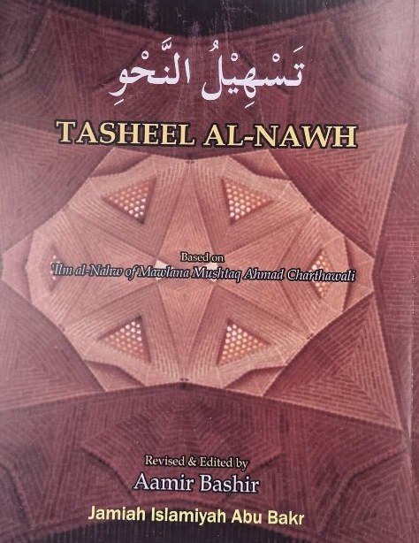
NahwaTashīl al-NaḥwJamiah Islamiyah Abu Bakr edition, maroon coverYear I$9.0009Tashīl al-ṢarfSarfTashīl al-ṢarfYear I$9.0010Tajweed Made EasyTajwidTajweed Made EasyYear I$6.00Second Year4 books
![](data:image/svg+xml,%3Csvg%20xmlns%3D%22http%3A%2F%2Fwww.w3.org%2F2000%2Fsvg%22%20viewBox%3D%220%200%20300%20400%22%20width%3D%22300%22%20height%3D%22400%22%3E%3Cdefs%3E%3ClinearGradient%20id%3D%22gv%22%20x1%3D%220%22%20y1%3D%220%22%20x2%3D%220%22%20y2%3D%221%22%3E%3Cstop%20offset%3D%220%22%20stop-color%3D%22%23f7e2a2%22%2F%3E%3Cstop%20offset%3D%22.45%22%20stop-color%3D%22%23d9aa48%22%2F%3E%3Cstop%20offset%3D%22.8%22%20stop-color%3D%22%23a9792a%22%2F%3E%3Cstop%20offset%3D%221%22%20stop-color%3D%22%23e8c778%22%2F%3E%3C%2FlinearGradient%3E%3C%2Fdefs%3E%3Cfilter%20id%3D%22n%22%20x%3D%220%22%20y%3D%220%22%20width%3D%22100%25%22%20height%3D%22100%25%22%3E%3CfeTurbulence%20type%3D%22fractalNoise%22%20baseFrequency%3D%220.9%22%20numOctaves%3D%223%22%20stitchTiles%3D%22stitch%22%2F%3E%3CfeColorMatrix%20values%3D%220%200%200%200%200%20%200%200%200%200%200%20%200%200%200%200%200%20%200.5%200%200%200%20-0.22%22%2F%3E%3C%2Ffilter%3E%3ClinearGradient%20id%3D%22l%22%20x1%3D%220%22%20y1%3D%220%22%20x2%3D%221%22%20y2%3D%220%22%3E%3Cstop%20offset%3D%220%22%20stop-opacity%3D%220.4%22%2F%3E%3Cstop%20offset%3D%220.16%22%20stop-opacity%3D%220.04%22%2F%3E%3Cstop%20offset%3D%220.5%22%20stop-color%3D%22%23fff%22%20stop-opacity%3D%220.07%22%2F%3E%3Cstop%20offset%3D%221%22%20stop-opacity%3D%220.28%22%2F%3E%3C%2FlinearGradient%3E%3Cpattern%20id%3D%22b%22%20width%3D%228%22%20height%3D%2214%22%20patternUnits%3D%22userSpaceOnUse%22%20y%3D%2212%22%3E%3Cpath%20d%3D%22M1.2%200C6.8%203.5%206.8%2010.5%201.2%2014M6.8%200C1.2%203.5%201.2%2010.5%206.8%2014%22%20stroke%3D%22%23d9aa48%22%20stroke-width%3D%221.3%22%20fill%3D%22none%22%2F%3E%3C%2Fpattern%3E%3Crect%20width%3D%22300%22%20height%3D%22400%22%20fill%3D%22%2304222a%22%2F%3E%3Crect%20x%3D%2212%22%20y%3D%2212%22%20width%3D%22276%22%20height%3D%22376%22%20fill%3D%22none%22%20stroke%3D%22%23d9aa48%22%20stroke-width%3D%221.8%22%2F%3E%3Crect%20x%3D%2217%22%20y%3D%2216%22%20width%3D%228%22%20height%3D%22368%22%20fill%3D%22url%28%23b%29%22%2F%3E%3Crect%20x%3D%22275%22%20y%3D%2216%22%20width%3D%228%22%20height%3D%22368%22%20fill%3D%22url%28%23b%29%22%2F%3E%3Crect%20x%3D%2231%22%20y%3D%2220%22%20width%3D%22238%22%20height%3D%22360%22%20fill%3D%22%23136170%22%20fill-opacity%3D%22.55%22%20stroke%3D%22%23d9aa48%22%2F%3E%3Cg%20transform%3D%22translate%28150%200%29%20scale%282.2%29%22%3E%3Cline%20x1%3D%220%22%20y1%3D%2212.5%22%20x2%3D%220%22%20y2%3D%2218%22%20stroke%3D%22%23d9aa48%22%20stroke-width%3D%22.8%22%2F%3E%3Ccircle%20cx%3D%220%22%20cy%3D%2214.5%22%20r%3D%221.3%22%20fill%3D%22url%28%23gv%29%22%2F%3E%3Cpath%20d%3D%22M0%2018C7%2024%207%2031%200%2036.5C-7%2031%20-7%2024%200%2018Z%22%20fill%3D%22url%28%23gv%29%22%2F%3E%3Cpath%20d%3D%22M0%2023.5C3.2%2026.5%203.2%2030%200%2032.5C-3.2%2030%20-3.2%2026.5%200%2023.5Z%22%20fill%3D%22%2304222a%22%2F%3E%3Ccircle%20cx%3D%220%22%20cy%3D%2228.3%22%20r%3D%220.9%22%20fill%3D%22url%28%23gv%29%22%2F%3E%3C%2Fg%3E%3Cpath%20d%3D%22M150%20104%20C162.24%20120.5%20218%20113%20218%20134%20L218%20276%20C218%20297%20162.24%20289.5%20150%20306%20C137.76%20289.5%2082%20297%2082%20276%20L82%20134%20C82%20113%20137.76%20120.5%20150%20104%20Z%22%20fill%3D%22%2304222a%22%20stroke%3D%22url%28%23gv%29%22%20stroke-width%3D%221.3%22%2F%3E%3Cpath%20d%3D%22M150%20107.6%20C161.77%20123%20215.4%20116%20215.4%20135.6%20L215.4%20274.4%20C215.4%20294%20161.77%20287%20150%20302.4%20C138.23%20287%2084.6%20294%2084.6%20274.4%20L84.6%20135.6%20C84.6%20116%20138.23%20123%20150%20107.6%20Z%22%20fill%3D%22none%22%20stroke%3D%22%23d9aa48%22%20stroke-width%3D%22.55%22%20opacity%3D%22.75%22%2F%3E%3Ccircle%20cx%3D%22150%22%20cy%3D%22101.4%22%20r%3D%221.3%22%20fill%3D%22url%28%23gv%29%22%2F%3E%3Ccircle%20cx%3D%22150%22%20cy%3D%22308.6%22%20r%3D%221.3%22%20fill%3D%22url%28%23gv%29%22%2F%3E%3Cg%20transform%3D%22translate%28150%20326%29%20scale%282.2%29%22%3E%3Cpath%20d%3D%22M0%200L3.5%204L0%208L-3.5%204Z%22%20fill%3D%22url%28%23gv%29%22%2F%3E%3C%2Fg%3E%3Ctext%20x%3D%22150%22%20y%3D%22213.05%22%20text-anchor%3D%22middle%22%20fill%3D%22%23f4dfa2%22%20font-family%3D%22Georgia%2C%20serif%22%20font-size%3D%2223%22%20font-weight%3D%22600%22%3E%C4%80s%C4%81n%20Na%E1%B8%A5w%3C%2Ftext%3E%3Crect%20width%3D%22300%22%20height%3D%22400%22%20filter%3D%22url%28%23n%29%22%2F%3E%3Crect%20width%3D%22300%22%20height%3D%22400%22%20fill%3D%22url%28%23l%29%22%2F%3E%3C%2Fsvg%3E)
![](data:image/svg+xml,%3Csvg%20xmlns%3D%22http%3A%2F%2Fwww.w3.org%2F2000%2Fsvg%22%20viewBox%3D%220%200%20300%20400%22%20width%3D%22300%22%20height%3D%22400%22%3E%3Cdefs%3E%3ClinearGradient%20id%3D%22gv%22%20x1%3D%220%22%20y1%3D%220%22%20x2%3D%220%22%20y2%3D%221%22%3E%3Cstop%20offset%3D%220%22%20stop-color%3D%22%23f7e2a2%22%2F%3E%3Cstop%20offset%3D%22.45%22%20stop-color%3D%22%23d9aa48%22%2F%3E%3Cstop%20offset%3D%22.8%22%20stop-color%3D%22%23a9792a%22%2F%3E%3Cstop%20offset%3D%221%22%20stop-color%3D%22%23e8c778%22%2F%3E%3C%2FlinearGradient%3E%3C%2Fdefs%3E%3Cfilter%20id%3D%22n%22%20x%3D%220%22%20y%3D%220%22%20width%3D%22100%25%22%20height%3D%22100%25%22%3E%3CfeTurbulence%20type%3D%22fractalNoise%22%20baseFrequency%3D%220.9%22%20numOctaves%3D%223%22%20stitchTiles%3D%22stitch%22%2F%3E%3CfeColorMatrix%20values%3D%220%200%200%200%200%20%200%200%200%200%200%20%200%200%200%200%200%20%200.5%200%200%200%20-0.22%22%2F%3E%3C%2Ffilter%3E%3ClinearGradient%20id%3D%22l%22%20x1%3D%220%22%20y1%3D%220%22%20x2%3D%221%22%20y2%3D%220%22%3E%3Cstop%20offset%3D%220%22%20stop-opacity%3D%220.4%22%2F%3E%3Cstop%20offset%3D%220.16%22%20stop-opacity%3D%220.04%22%2F%3E%3Cstop%20offset%3D%220.5%22%20stop-color%3D%22%23fff%22%20stop-opacity%3D%220.07%22%2F%3E%3Cstop%20offset%3D%221%22%20stop-opacity%3D%220.28%22%2F%3E%3C%2FlinearGradient%3E%3Cpattern%20id%3D%22b%22%20width%3D%228%22%20height%3D%2214%22%20patternUnits%3D%22userSpaceOnUse%22%20y%3D%2212%22%3E%3Cpath%20d%3D%22M1.2%200C6.8%203.5%206.8%2010.5%201.2%2014M6.8%200C1.2%203.5%201.2%2010.5%206.8%2014%22%20stroke%3D%22%23d9aa48%22%20stroke-width%3D%221.3%22%20fill%3D%22none%22%2F%3E%3C%2Fpattern%3E%3Crect%20width%3D%22300%22%20height%3D%22400%22%20fill%3D%22%23021417%22%2F%3E%3Crect%20x%3D%2212%22%20y%3D%2212%22%20width%3D%22276%22%20height%3D%22376%22%20fill%3D%22none%22%20stroke%3D%22%23d9aa48%22%20stroke-width%3D%221.8%22%2F%3E%3Crect%20x%3D%2217%22%20y%3D%2216%22%20width%3D%228%22%20height%3D%22368%22%20fill%3D%22url%28%23b%29%22%2F%3E%3Crect%20x%3D%22275%22%20y%3D%2216%22%20width%3D%228%22%20height%3D%22368%22%20fill%3D%22url%28%23b%29%22%2F%3E%3Crect%20x%3D%2231%22%20y%3D%2220%22%20width%3D%22238%22%20height%3D%22360%22%20fill%3D%22%230c4a54%22%20fill-opacity%3D%22.55%22%20stroke%3D%22%23d9aa48%22%2F%3E%3Cg%20transform%3D%22translate%28150%200%29%20scale%282.2%29%22%3E%3Cline%20x1%3D%220%22%20y1%3D%2212.5%22%20x2%3D%220%22%20y2%3D%2218%22%20stroke%3D%22%23d9aa48%22%20stroke-width%3D%22.8%22%2F%3E%3Ccircle%20cx%3D%220%22%20cy%3D%2214.5%22%20r%3D%221.3%22%20fill%3D%22url%28%23gv%29%22%2F%3E%3Cpath%20d%3D%22M0%2018C7%2024%207%2031%200%2036.5C-7%2031%20-7%2024%200%2018Z%22%20fill%3D%22url%28%23gv%29%22%2F%3E%3Cpath%20d%3D%22M0%2023.5C3.2%2026.5%203.2%2030%200%2032.5C-3.2%2030%20-3.2%2026.5%200%2023.5Z%22%20fill%3D%22%23021417%22%2F%3E%3Ccircle%20cx%3D%220%22%20cy%3D%2228.3%22%20r%3D%220.9%22%20fill%3D%22url%28%23gv%29%22%2F%3E%3C%2Fg%3E%3Cpath%20d%3D%22M150%20104%20C162.24%20120.5%20218%20113%20218%20134%20L218%20276%20C218%20297%20162.24%20289.5%20150%20306%20C137.76%20289.5%2082%20297%2082%20276%20L82%20134%20C82%20113%20137.76%20120.5%20150%20104%20Z%22%20fill%3D%22%23021417%22%20stroke%3D%22url%28%23gv%29%22%20stroke-width%3D%221.3%22%2F%3E%3Cpath%20d%3D%22M150%20107.6%20C161.77%20123%20215.4%20116%20215.4%20135.6%20L215.4%20274.4%20C215.4%20294%20161.77%20287%20150%20302.4%20C138.23%20287%2084.6%20294%2084.6%20274.4%20L84.6%20135.6%20C84.6%20116%20138.23%20123%20150%20107.6%20Z%22%20fill%3D%22none%22%20stroke%3D%22%23d9aa48%22%20stroke-width%3D%22.55%22%20opacity%3D%22.75%22%2F%3E%3Ccircle%20cx%3D%22150%22%20cy%3D%22101.4%22%20r%3D%221.3%22%20fill%3D%22url%28%23gv%29%22%2F%3E%3Ccircle%20cx%3D%22150%22%20cy%3D%22308.6%22%20r%3D%221.3%22%20fill%3D%22url%28%23gv%29%22%2F%3E%3Cg%20transform%3D%22translate%28150%20326%29%20scale%282.2%29%22%3E%3Cpath%20d%3D%22M0%200L3.5%204L0%208L-3.5%204Z%22%20fill%3D%22url%28%23gv%29%22%2F%3E%3C%2Fg%3E%3Ctext%20x%3D%22150%22%20y%3D%22187%22%20text-anchor%3D%22middle%22%20fill%3D%22%23f4dfa2%22%20font-family%3D%22Georgia%2C%20serif%22%20font-size%3D%2220%22%20font-weight%3D%22600%22%3E%CA%BFIlm%3C%2Ftext%3E%3Ctext%20x%3D%22150%22%20y%3D%22212%22%20text-anchor%3D%22middle%22%20fill%3D%22%23f4dfa2%22%20font-family%3D%22Georgia%2C%20serif%22%20font-size%3D%2220%22%20font-weight%3D%22600%22%3Eal-%E1%B9%A2arf%3C%2Ftext%3E%3Ctext%20x%3D%22150%22%20y%3D%22237%22%20text-anchor%3D%22middle%22%20fill%3D%22%23f4dfa2%22%20font-family%3D%22Georgia%2C%20serif%22%20font-size%3D%2220%22%20font-weight%3D%22600%22%3E%28Awwal%C4%ABn%29%3C%2Ftext%3E%3Crect%20width%3D%22300%22%20height%3D%22400%22%20filter%3D%22url%28%23n%29%22%2F%3E%3Crect%20width%3D%22300%22%20height%3D%22400%22%20fill%3D%22url%28%23l%29%22%2F%3E%3C%2Fsvg%3E)
![](data:image/svg+xml,%3Csvg%20xmlns%3D%22http%3A%2F%2Fwww.w3.org%2F2000%2Fsvg%22%20viewBox%3D%220%200%20300%20400%22%20width%3D%22300%22%20height%3D%22400%22%3E%3Cdefs%3E%3ClinearGradient%20id%3D%22gv%22%20x1%3D%220%22%20y1%3D%220%22%20x2%3D%220%22%20y2%3D%221%22%3E%3Cstop%20offset%3D%220%22%20stop-color%3D%22%23f7e2a2%22%2F%3E%3Cstop%20offset%3D%22.45%22%20stop-color%3D%22%23d9aa48%22%2F%3E%3Cstop%20offset%3D%22.8%22%20stop-color%3D%22%23a9792a%22%2F%3E%3Cstop%20offset%3D%221%22%20stop-color%3D%22%23e8c778%22%2F%3E%3C%2FlinearGradient%3E%3C%2Fdefs%3E%3Cfilter%20id%3D%22n%22%20x%3D%220%22%20y%3D%220%22%20width%3D%22100%25%22%20height%3D%22100%25%22%3E%3CfeTurbulence%20type%3D%22fractalNoise%22%20baseFrequency%3D%220.9%22%20numOctaves%3D%223%22%20stitchTiles%3D%22stitch%22%2F%3E%3CfeColorMatrix%20values%3D%220%200%200%200%200%20%200%200%200%200%200%20%200%200%200%200%200%20%200.5%200%200%200%20-0.22%22%2F%3E%3C%2Ffilter%3E%3ClinearGradient%20id%3D%22l%22%20x1%3D%220%22%20y1%3D%220%22%20x2%3D%221%22%20y2%3D%220%22%3E%3Cstop%20offset%3D%220%22%20stop-opacity%3D%220.4%22%2F%3E%3Cstop%20offset%3D%220.16%22%20stop-opacity%3D%220.04%22%2F%3E%3Cstop%20offset%3D%220.5%22%20stop-color%3D%22%23fff%22%20stop-opacity%3D%220.07%22%2F%3E%3Cstop%20offset%3D%221%22%20stop-opacity%3D%220.28%22%2F%3E%3C%2FlinearGradient%3E%3Cpattern%20id%3D%22b%22%20width%3D%228%22%20height%3D%2214%22%20patternUnits%3D%22userSpaceOnUse%22%20y%3D%2212%22%3E%3Cpath%20d%3D%22M1.2%200C6.8%203.5%206.8%2010.5%201.2%2014M6.8%200C1.2%203.5%201.2%2010.5%206.8%2014%22%20stroke%3D%22%23d9aa48%22%20stroke-width%3D%221.3%22%20fill%3D%22none%22%2F%3E%3C%2Fpattern%3E%3Crect%20width%3D%22300%22%20height%3D%22400%22%20fill%3D%22%2303191d%22%2F%3E%3Crect%20x%3D%2212%22%20y%3D%2212%22%20width%3D%22276%22%20height%3D%22376%22%20fill%3D%22none%22%20stroke%3D%22%23d9aa48%22%20stroke-width%3D%221.8%22%2F%3E%3Crect%20x%3D%2217%22%20y%3D%2216%22%20width%3D%228%22%20height%3D%22368%22%20fill%3D%22url%28%23b%29%22%2F%3E%3Crect%20x%3D%22275%22%20y%3D%2216%22%20width%3D%228%22%20height%3D%22368%22%20fill%3D%22url%28%23b%29%22%2F%3E%3Crect%20x%3D%2231%22%20y%3D%2220%22%20width%3D%22238%22%20height%3D%22360%22%20fill%3D%22%230f5560%22%20fill-opacity%3D%22.55%22%20stroke%3D%22%23d9aa48%22%2F%3E%3Cg%20transform%3D%22translate%28150%200%29%20scale%282.2%29%22%3E%3Cline%20x1%3D%220%22%20y1%3D%2212.5%22%20x2%3D%220%22%20y2%3D%2218%22%20stroke%3D%22%23d9aa48%22%20stroke-width%3D%22.8%22%2F%3E%3Ccircle%20cx%3D%220%22%20cy%3D%2214.5%22%20r%3D%221.3%22%20fill%3D%22url%28%23gv%29%22%2F%3E%3Cpath%20d%3D%22M0%2018C7%2024%207%2031%200%2036.5C-7%2031%20-7%2024%200%2018Z%22%20fill%3D%22url%28%23gv%29%22%2F%3E%3Cpath%20d%3D%22M0%2023.5C3.2%2026.5%203.2%2030%200%2032.5C-3.2%2030%20-3.2%2026.5%200%2023.5Z%22%20fill%3D%22%2303191d%22%2F%3E%3Ccircle%20cx%3D%220%22%20cy%3D%2228.3%22%20r%3D%220.9%22%20fill%3D%22url%28%23gv%29%22%2F%3E%3C%2Fg%3E%3Cpath%20d%3D%22M150%20104%20C162.24%20120.5%20218%20113%20218%20134%20L218%20276%20C218%20297%20162.24%20289.5%20150%20306%20C137.76%20289.5%2082%20297%2082%20276%20L82%20134%20C82%20113%20137.76%20120.5%20150%20104%20Z%22%20fill%3D%22%2303191d%22%20stroke%3D%22url%28%23gv%29%22%20stroke-width%3D%221.3%22%2F%3E%3Cpath%20d%3D%22M150%20107.6%20C161.77%20123%20215.4%20116%20215.4%20135.6%20L215.4%20274.4%20C215.4%20294%20161.77%20287%20150%20302.4%20C138.23%20287%2084.6%20294%2084.6%20274.4%20L84.6%20135.6%20C84.6%20116%20138.23%20123%20150%20107.6%20Z%22%20fill%3D%22none%22%20stroke%3D%22%23d9aa48%22%20stroke-width%3D%22.55%22%20opacity%3D%22.75%22%2F%3E%3Ccircle%20cx%3D%22150%22%20cy%3D%22101.4%22%20r%3D%221.3%22%20fill%3D%22url%28%23gv%29%22%2F%3E%3Ccircle%20cx%3D%22150%22%20cy%3D%22308.6%22%20r%3D%221.3%22%20fill%3D%22url%28%23gv%29%22%2F%3E%3Cg%20transform%3D%22translate%28150%20326%29%20scale%282.2%29%22%3E%3Cpath%20d%3D%22M0%200L3.5%204L0%208L-3.5%204Z%22%20fill%3D%22url%28%23gv%29%22%2F%3E%3C%2Fg%3E%3Ctext%20x%3D%22150%22%20y%3D%22199.05%22%20text-anchor%3D%22middle%22%20fill%3D%22%23f4dfa2%22%20font-family%3D%22Georgia%2C%20serif%22%20font-size%3D%2223%22%20font-weight%3D%22600%22%3EBahisht%C4%AB%3C%2Ftext%3E%3Ctext%20x%3D%22150%22%20y%3D%22227.05%22%20text-anchor%3D%22middle%22%20fill%3D%22%23f4dfa2%22%20font-family%3D%22Georgia%2C%20serif%22%20font-size%3D%2223%22%20font-weight%3D%22600%22%3EZewar%3C%2Ftext%3E%3Crect%20width%3D%22300%22%20height%3D%22400%22%20filter%3D%22url%28%23n%29%22%2F%3E%3Crect%20width%3D%22300%22%20height%3D%22400%22%20fill%3D%22url%28%23l%29%22%2F%3E%3C%2Fsvg%3E)

Third Year6 books
01Al-Fiqh al-Muyassar FiqhAl-Fiqh al-MuyassarYear III$5.0002ʿIlm al-Naḥw
FiqhAl-Fiqh al-MuyassarYear III$5.0002ʿIlm al-Naḥw NahwaʿIlm al-NaḥwYear III$5.0003ʿIlm al-Ṣarf (Ākhirīn)
NahwaʿIlm al-NaḥwYear III$5.0003ʿIlm al-Ṣarf (Ākhirīn) SarfʿIlm al-Ṣarf (Ākhirīn)Year III$6.0004Zād al-Ṭālibīn
SarfʿIlm al-Ṣarf (Ākhirīn)Year III$6.0004Zād al-Ṭālibīn HadithZād al-ṬālibīnYear III$5.0005Jamāl al-Qurʾān
HadithZād al-ṬālibīnYear III$5.0005Jamāl al-Qurʾān TajwidJamāl al-QurʾānWith the Zinat al-Furqan notes, Maktaba RahmaniyyaYear III$3.00
TajwidJamāl al-QurʾānWith the Zinat al-Furqan notes, Maktaba RahmaniyyaYear III$3.00
FiqhAl-Fiqh al-MuyassarYear III$5.0002ʿIlm al-NaḥwNahwaʿIlm al-NaḥwYear III$5.0003ʿIlm al-Ṣarf (Ākhirīn)SarfʿIlm al-Ṣarf (Ākhirīn)Year III$6.0004Zād al-ṬālibīnHadithZād al-ṬālibīnYear III$5.0005Jamāl al-Qurʾān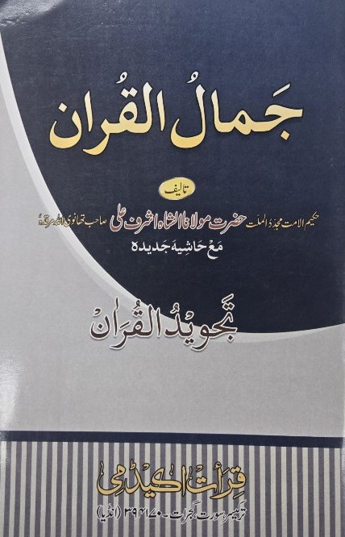
TajwidJamāl al-QurʾānQira'at Academy editionYear III$3.0006Jamāl al-QurʾānTajwidJamāl al-QurʾānWith the Zinat al-Furqan notes, Maktaba RahmaniyyaYear III$3.00Fourth Year5 books


Fifth Year16 books
01Riyāḍ al-Ṣāliḥīn HadithRiyāḍ al-ṢāliḥīnYears IV & V$15.0002Al-Hidāya
HadithRiyāḍ al-ṢāliḥīnYears IV & V$15.0002Al-Hidāya FiqhAl-HidāyaYears V & VI$60.0003Uṣūl al-Shāshī
FiqhAl-HidāyaYears V & VI$60.0003Uṣūl al-Shāshī Usul FiqhUṣūl al-ShāshīLight blue coverYear V$10.0004Uṣūl al-Shāshī
Usul FiqhUṣūl al-ShāshīLight blue coverYear V$10.0004Uṣūl al-Shāshī Usul FiqhUṣūl al-ShāshīWood-grain coverYear V$10.0005Uṣūl al-Shāshī
Usul FiqhUṣūl al-ShāshīWood-grain coverYear V$10.0005Uṣūl al-Shāshī Usul FiqhUṣūl al-ShāshīLilac coverYear V$10.0007Al-Fawāʾid al-Makkiyya
Usul FiqhUṣūl al-ShāshīLilac coverYear V$10.0007Al-Fawāʾid al-Makkiyya TajwidAl-Fawāʾid al-MakkiyyaYear V$3.0008Al-Muqaddima al-Jazariyya
TajwidAl-Fawāʾid al-MakkiyyaYear V$3.0008Al-Muqaddima al-Jazariyya TajwidAl-Muqaddima al-JazariyyaYear V$3.0009Khulāṣat al-Bayān
TajwidAl-Muqaddima al-JazariyyaYear V$3.0009Khulāṣat al-Bayān TajwidKhulāṣat al-BayānYear V$5.0010Muʿīn al-Farāʾiḍ
TajwidKhulāṣat al-BayānYear V$5.0010Muʿīn al-Farāʾiḍ MirathMuʿīn al-FarāʾiḍYear V$5.0011Al-Sirājī
MirathMuʿīn al-FarāʾiḍYear V$5.0011Al-Sirājī![](data:image/svg+xml,%3Csvg%20xmlns%3D%22http%3A%2F%2Fwww.w3.org%2F2000%2Fsvg%22%20viewBox%3D%220%200%20300%20400%22%20width%3D%22300%22%20height%3D%22400%22%3E%3Cdefs%3E%3ClinearGradient%20id%3D%22gv%22%20x1%3D%220%22%20y1%3D%220%22%20x2%3D%220%22%20y2%3D%221%22%3E%3Cstop%20offset%3D%220%22%20stop-color%3D%22%23f7e2a2%22%2F%3E%3Cstop%20offset%3D%22.45%22%20stop-color%3D%22%23d9aa48%22%2F%3E%3Cstop%20offset%3D%22.8%22%20stop-color%3D%22%23a9792a%22%2F%3E%3Cstop%20offset%3D%221%22%20stop-color%3D%22%23e8c778%22%2F%3E%3C%2FlinearGradient%3E%3C%2Fdefs%3E%3Cfilter%20id%3D%22n%22%20x%3D%220%22%20y%3D%220%22%20width%3D%22100%25%22%20height%3D%22100%25%22%3E%3CfeTurbulence%20type%3D%22fractalNoise%22%20baseFrequency%3D%220.9%22%20numOctaves%3D%223%22%20stitchTiles%3D%22stitch%22%2F%3E%3CfeColorMatrix%20values%3D%220%200%200%200%200%20%200%200%200%200%200%20%200%200%200%200%200%20%200.5%200%200%200%20-0.22%22%2F%3E%3C%2Ffilter%3E%3ClinearGradient%20id%3D%22l%22%20x1%3D%220%22%20y1%3D%220%22%20x2%3D%221%22%20y2%3D%220%22%3E%3Cstop%20offset%3D%220%22%20stop-opacity%3D%220.4%22%2F%3E%3Cstop%20offset%3D%220.16%22%20stop-opacity%3D%220.04%22%2F%3E%3Cstop%20offset%3D%220.5%22%20stop-color%3D%22%23fff%22%20stop-opacity%3D%220.07%22%2F%3E%3Cstop%20offset%3D%221%22%20stop-opacity%3D%220.28%22%2F%3E%3C%2FlinearGradient%3E%3Cpattern%20id%3D%22b%22%20width%3D%228%22%20height%3D%2214%22%20patternUnits%3D%22userSpaceOnUse%22%20y%3D%2212%22%3E%3Cpath%20d%3D%22M1.2%200C6.8%203.5%206.8%2010.5%201.2%2014M6.8%200C1.2%203.5%201.2%2010.5%206.8%2014%22%20stroke%3D%22%23d9aa48%22%20stroke-width%3D%221.3%22%20fill%3D%22none%22%2F%3E%3C%2Fpattern%3E%3Crect%20width%3D%22300%22%20height%3D%22400%22%20fill%3D%22%23230d2a%22%2F%3E%3Crect%20x%3D%2212%22%20y%3D%2212%22%20width%3D%22276%22%20height%3D%22376%22%20fill%3D%22none%22%20stroke%3D%22%23d9aa48%22%20stroke-width%3D%221.8%22%2F%3E%3Crect%20x%3D%2217%22%20y%3D%2216%22%20width%3D%228%22%20height%3D%22368%22%20fill%3D%22url%28%23b%29%22%2F%3E%3Crect%20x%3D%22275%22%20y%3D%2216%22%20width%3D%228%22%20height%3D%22368%22%20fill%3D%22url%28%23b%29%22%2F%3E%3Crect%20x%3D%2231%22%20y%3D%2220%22%20width%3D%22238%22%20height%3D%22360%22%20fill%3D%22%23582a66%22%20fill-opacity%3D%22.55%22%20stroke%3D%22%23d9aa48%22%2F%3E%3Cg%20transform%3D%22translate%28150%200%29%20scale%282.2%29%22%3E%3Cline%20x1%3D%220%22%20y1%3D%2212.5%22%20x2%3D%220%22%20y2%3D%2218%22%20stroke%3D%22%23d9aa48%22%20stroke-width%3D%22.8%22%2F%3E%3Ccircle%20cx%3D%220%22%20cy%3D%2214.5%22%20r%3D%221.3%22%20fill%3D%22url%28%23gv%29%22%2F%3E%3Cpath%20d%3D%22M0%2018C7%2024%207%2031%200%2036.5C-7%2031%20-7%2024%200%2018Z%22%20fill%3D%22url%28%23gv%29%22%2F%3E%3Cpath%20d%3D%22M0%2023.5C3.2%2026.5%203.2%2030%200%2032.5C-3.2%2030%20-3.2%2026.5%200%2023.5Z%22%20fill%3D%22%23230d2a%22%2F%3E%3Ccircle%20cx%3D%220%22%20cy%3D%2228.3%22%20r%3D%220.9%22%20fill%3D%22url%28%23gv%29%22%2F%3E%3C%2Fg%3E%3Cpath%20d%3D%22M150%20104%20C162.24%20120.5%20218%20113%20218%20134%20L218%20276%20C218%20297%20162.24%20289.5%20150%20306%20C137.76%20289.5%2082%20297%2082%20276%20L82%20134%20C82%20113%20137.76%20120.5%20150%20104%20Z%22%20fill%3D%22%23230d2a%22%20stroke%3D%22url%28%23gv%29%22%20stroke-width%3D%221.3%22%2F%3E%3Cpath%20d%3D%22M150%20107.6%20C161.77%20123%20215.4%20116%20215.4%20135.6%20L215.4%20274.4%20C215.4%20294%20161.77%20287%20150%20302.4%20C138.23%20287%2084.6%20294%2084.6%20274.4%20L84.6%20135.6%20C84.6%20116%20138.23%20123%20150%20107.6%20Z%22%20fill%3D%22none%22%20stroke%3D%22%23d9aa48%22%20stroke-width%3D%22.55%22%20opacity%3D%22.75%22%2F%3E%3Ccircle%20cx%3D%22150%22%20cy%3D%22101.4%22%20r%3D%221.3%22%20fill%3D%22url%28%23gv%29%22%2F%3E%3Ccircle%20cx%3D%22150%22%20cy%3D%22308.6%22%20r%3D%221.3%22%20fill%3D%22url%28%23gv%29%22%2F%3E%3Cg%20transform%3D%22translate%28150%20326%29%20scale%282.2%29%22%3E%3Cpath%20d%3D%22M0%200L3.5%204L0%208L-3.5%204Z%22%20fill%3D%22url%28%23gv%29%22%2F%3E%3C%2Fg%3E%3Ctext%20x%3D%22150%22%20y%3D%22213.05%22%20text-anchor%3D%22middle%22%20fill%3D%22%23f4dfa2%22%20font-family%3D%22Georgia%2C%20serif%22%20font-size%3D%2223%22%20font-weight%3D%22600%22%3EAl-Sir%C4%81j%C4%AB%3C%2Ftext%3E%3Crect%20width%3D%22300%22%20height%3D%22400%22%20filter%3D%22url%28%23n%29%22%2F%3E%3Crect%20width%3D%22300%22%20height%3D%22400%22%20fill%3D%22url%28%23l%29%22%2F%3E%3C%2Fsvg%3E) MirathAl-SirājīYear V$10.0012Nūr al-Yaqīn
MirathAl-SirājīYear V$10.0012Nūr al-Yaqīn SiraNūr al-YaqīnYear V$10.0013Nafḥat al-ʿArab
SiraNūr al-YaqīnYear V$10.0013Nafḥat al-ʿArab![](data:image/svg+xml,%3Csvg%20xmlns%3D%22http%3A%2F%2Fwww.w3.org%2F2000%2Fsvg%22%20viewBox%3D%220%200%20300%20400%22%20width%3D%22300%22%20height%3D%22400%22%3E%3Cdefs%3E%3ClinearGradient%20id%3D%22gv%22%20x1%3D%220%22%20y1%3D%220%22%20x2%3D%220%22%20y2%3D%221%22%3E%3Cstop%20offset%3D%220%22%20stop-color%3D%22%23f7e2a2%22%2F%3E%3Cstop%20offset%3D%22.45%22%20stop-color%3D%22%23d9aa48%22%2F%3E%3Cstop%20offset%3D%22.8%22%20stop-color%3D%22%23a9792a%22%2F%3E%3Cstop%20offset%3D%221%22%20stop-color%3D%22%23e8c778%22%2F%3E%3C%2FlinearGradient%3E%3C%2Fdefs%3E%3Cfilter%20id%3D%22n%22%20x%3D%220%22%20y%3D%220%22%20width%3D%22100%25%22%20height%3D%22100%25%22%3E%3CfeTurbulence%20type%3D%22fractalNoise%22%20baseFrequency%3D%220.9%22%20numOctaves%3D%223%22%20stitchTiles%3D%22stitch%22%2F%3E%3CfeColorMatrix%20values%3D%220%200%200%200%200%20%200%200%200%200%200%20%200%200%200%200%200%20%200.5%200%200%200%20-0.22%22%2F%3E%3C%2Ffilter%3E%3ClinearGradient%20id%3D%22l%22%20x1%3D%220%22%20y1%3D%220%22%20x2%3D%221%22%20y2%3D%220%22%3E%3Cstop%20offset%3D%220%22%20stop-opacity%3D%220.4%22%2F%3E%3Cstop%20offset%3D%220.16%22%20stop-opacity%3D%220.04%22%2F%3E%3Cstop%20offset%3D%220.5%22%20stop-color%3D%22%23fff%22%20stop-opacity%3D%220.07%22%2F%3E%3Cstop%20offset%3D%221%22%20stop-opacity%3D%220.28%22%2F%3E%3C%2FlinearGradient%3E%3Cpattern%20id%3D%22b%22%20width%3D%228%22%20height%3D%2214%22%20patternUnits%3D%22userSpaceOnUse%22%20y%3D%2212%22%3E%3Cpath%20d%3D%22M1.2%200C6.8%203.5%206.8%2010.5%201.2%2014M6.8%200C1.2%203.5%201.2%2010.5%206.8%2014%22%20stroke%3D%22%23d9aa48%22%20stroke-width%3D%221.3%22%20fill%3D%22none%22%2F%3E%3C%2Fpattern%3E%3Crect%20width%3D%22300%22%20height%3D%22400%22%20fill%3D%22%231c0b22%22%2F%3E%3Crect%20x%3D%2212%22%20y%3D%2212%22%20width%3D%22276%22%20height%3D%22376%22%20fill%3D%22none%22%20stroke%3D%22%23d9aa48%22%20stroke-width%3D%221.8%22%2F%3E%3Crect%20x%3D%2217%22%20y%3D%2216%22%20width%3D%228%22%20height%3D%22368%22%20fill%3D%22url%28%23b%29%22%2F%3E%3Crect%20x%3D%22275%22%20y%3D%2216%22%20width%3D%228%22%20height%3D%22368%22%20fill%3D%22url%28%23b%29%22%2F%3E%3Crect%20x%3D%2231%22%20y%3D%2220%22%20width%3D%22238%22%20height%3D%22360%22%20fill%3D%22%234b2458%22%20fill-opacity%3D%22.55%22%20stroke%3D%22%23d9aa48%22%2F%3E%3Cg%20transform%3D%22translate%28150%200%29%20scale%282.2%29%22%3E%3Cline%20x1%3D%220%22%20y1%3D%2212.5%22%20x2%3D%220%22%20y2%3D%2218%22%20stroke%3D%22%23d9aa48%22%20stroke-width%3D%22.8%22%2F%3E%3Ccircle%20cx%3D%220%22%20cy%3D%2214.5%22%20r%3D%221.3%22%20fill%3D%22url%28%23gv%29%22%2F%3E%3Cpath%20d%3D%22M0%2018C7%2024%207%2031%200%2036.5C-7%2031%20-7%2024%200%2018Z%22%20fill%3D%22url%28%23gv%29%22%2F%3E%3Cpath%20d%3D%22M0%2023.5C3.2%2026.5%203.2%2030%200%2032.5C-3.2%2030%20-3.2%2026.5%200%2023.5Z%22%20fill%3D%22%231c0b22%22%2F%3E%3Ccircle%20cx%3D%220%22%20cy%3D%2228.3%22%20r%3D%220.9%22%20fill%3D%22url%28%23gv%29%22%2F%3E%3C%2Fg%3E%3Cpath%20d%3D%22M150%20104%20C162.24%20120.5%20218%20113%20218%20134%20L218%20276%20C218%20297%20162.24%20289.5%20150%20306%20C137.76%20289.5%2082%20297%2082%20276%20L82%20134%20C82%20113%20137.76%20120.5%20150%20104%20Z%22%20fill%3D%22%231c0b22%22%20stroke%3D%22url%28%23gv%29%22%20stroke-width%3D%221.3%22%2F%3E%3Cpath%20d%3D%22M150%20107.6%20C161.77%20123%20215.4%20116%20215.4%20135.6%20L215.4%20274.4%20C215.4%20294%20161.77%20287%20150%20302.4%20C138.23%20287%2084.6%20294%2084.6%20274.4%20L84.6%20135.6%20C84.6%20116%20138.23%20123%20150%20107.6%20Z%22%20fill%3D%22none%22%20stroke%3D%22%23d9aa48%22%20stroke-width%3D%22.55%22%20opacity%3D%22.75%22%2F%3E%3Ccircle%20cx%3D%22150%22%20cy%3D%22101.4%22%20r%3D%221.3%22%20fill%3D%22url%28%23gv%29%22%2F%3E%3Ccircle%20cx%3D%22150%22%20cy%3D%22308.6%22%20r%3D%221.3%22%20fill%3D%22url%28%23gv%29%22%2F%3E%3Cg%20transform%3D%22translate%28150%20326%29%20scale%282.2%29%22%3E%3Cpath%20d%3D%22M0%200L3.5%204L0%208L-3.5%204Z%22%20fill%3D%22url%28%23gv%29%22%2F%3E%3C%2Fg%3E%3Ctext%20x%3D%22150%22%20y%3D%22199.05%22%20text-anchor%3D%22middle%22%20fill%3D%22%23f4dfa2%22%20font-family%3D%22Georgia%2C%20serif%22%20font-size%3D%2223%22%20font-weight%3D%22600%22%3ENaf%E1%B8%A5at%3C%2Ftext%3E%3Ctext%20x%3D%22150%22%20y%3D%22227.05%22%20text-anchor%3D%22middle%22%20fill%3D%22%23f4dfa2%22%20font-family%3D%22Georgia%2C%20serif%22%20font-size%3D%2223%22%20font-weight%3D%22600%22%3Eal-%CA%BFArab%3C%2Ftext%3E%3Crect%20width%3D%22300%22%20height%3D%22400%22%20filter%3D%22url%28%23n%29%22%2F%3E%3Crect%20width%3D%22300%22%20height%3D%22400%22%20fill%3D%22url%28%23l%29%22%2F%3E%3C%2Fsvg%3E) AdabNafḥat al-ʿArabYear V$15.0014Durūs al-Balāgha
AdabNafḥat al-ʿArabYear V$15.0014Durūs al-Balāgha BalaghaDurūs al-BalāghaBlue and white coverYear V$7.0015Durūs al-Balāgha
BalaghaDurūs al-BalāghaBlue and white coverYear V$7.0015Durūs al-Balāgha BalaghaDurūs al-BalāghaBlue and cream coverYear V$7.0016Durūs al-Balāgha
BalaghaDurūs al-BalāghaBlue and cream coverYear V$7.0016Durūs al-Balāgha BalaghaDurūs al-BalāghaLeather-look coverYear V$7.00
BalaghaDurūs al-BalāghaLeather-look coverYear V$7.00
HadithRiyāḍ al-ṢāliḥīnYears IV & V$15.0002Al-HidāyaFiqhAl-HidāyaYears V & VI$60.0003Uṣūl al-ShāshīUsul FiqhUṣūl al-ShāshīLight blue coverYear V$10.0004Uṣūl al-ShāshīUsul FiqhUṣūl al-ShāshīWood-grain coverYear V$10.0005Uṣūl al-Shāshī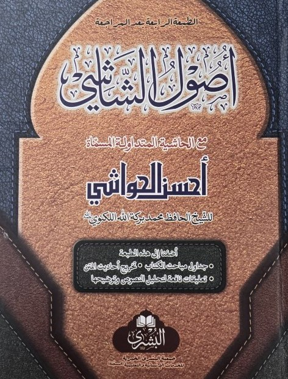
Usul FiqhUṣūl al-ShāshīBrown leather-look coverYear V$10.0006Uṣūl al-ShāshīUsul FiqhUṣūl al-ShāshīLilac coverYear V$10.0007Al-Fawāʾid al-MakkiyyaTajwidAl-Fawāʾid al-MakkiyyaYear V$3.0008Al-Muqaddima al-JazariyyaTajwidAl-Muqaddima al-JazariyyaYear V$3.0009Khulāṣat al-BayānTajwidKhulāṣat al-BayānYear V$5.0010Muʿīn al-FarāʾiḍMirathMuʿīn al-FarāʾiḍYear V$5.0011Al-SirājīMirathAl-SirājīYear V$10.0012Nūr al-YaqīnSiraNūr al-YaqīnYear V$10.0013Nafḥat al-ʿArabAdabNafḥat al-ʿArabYear V$15.0014Durūs al-BalāghaBalaghaDurūs al-BalāghaBlue and white coverYear V$7.0015Durūs al-BalāghaBalaghaDurūs al-BalāghaBlue and cream coverYear V$7.0016Durūs al-BalāghaBalaghaDurūs al-BalāghaLeather-look coverYear V$7.00Sixth Year11 books
01Al-HidāyaFiqhAl-HidāyaYears V & VI$60.0002Mishkāt al-Maṣābīḥ HadithMishkāt al-MaṣābīḥBrown cover, al-BushraYear VI$30.0005Tafsīr al-Jalālayn
HadithMishkāt al-MaṣābīḥBrown cover, al-BushraYear VI$30.0005Tafsīr al-Jalālayn TafseerTafsīr al-JalālaynGrey coverYear VI$35.0007Sharḥ al-ʿAqīda al-Ṭaḥāwiyya
TafseerTafsīr al-JalālaynGrey coverYear VI$35.0007Sharḥ al-ʿAqīda al-Ṭaḥāwiyya AqidahSharḥ al-ʿAqīda al-ṬaḥāwiyyaYear VI$10.0008Al-Fawz al-Kabīr
AqidahSharḥ al-ʿAqīda al-ṬaḥāwiyyaYear VI$10.0008Al-Fawz al-Kabīr Usul TafsirAl-Fawz al-KabīrPaperbackYear VI$5.0009Al-Fawz al-Kabīr
Usul TafsirAl-Fawz al-KabīrPaperbackYear VI$5.0009Al-Fawz al-Kabīr FikrGhazv-i FikrīYear VI$7.00
FikrGhazv-i FikrīYear VI$7.00
FiqhAl-HidāyaYears V & VI$60.0002Mishkāt al-Maṣābīḥ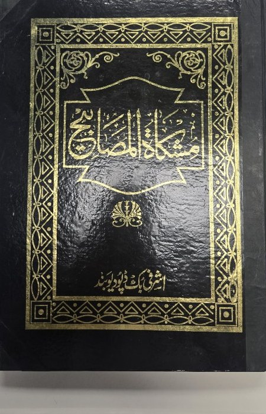
HadithMishkāt al-MaṣābīḥBlack and gold, Ashrafi Book DepotYear VI$30.0003Mishkāt al-Maṣābīḥ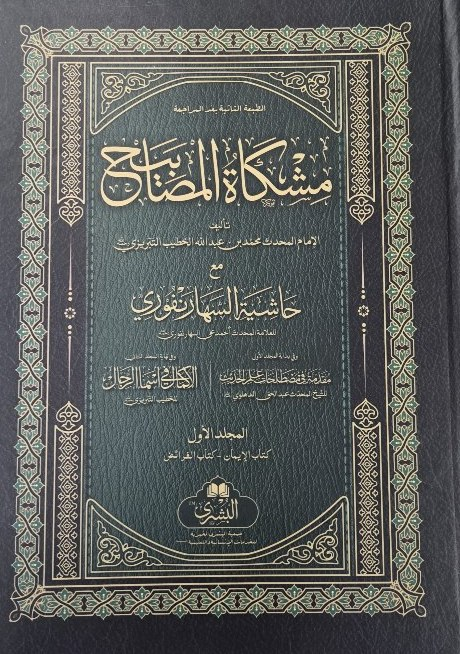
HadithMishkāt al-MaṣābīḥNavy cover, al-BushraYear VI$30.0004Mishkāt al-MaṣābīḥHadithMishkāt al-MaṣābīḥBrown cover, al-BushraYear VI$30.0005Tafsīr al-Jalālayn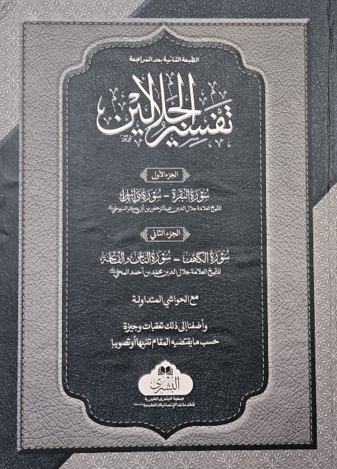
TafseerTafsīr al-JalālaynDark leather-look coverYear VI$35.0006Tafsīr al-JalālaynTafseerTafsīr al-JalālaynGrey coverYear VI$35.0007Sharḥ al-ʿAqīda al-ṬaḥāwiyyaAqidahSharḥ al-ʿAqīda al-ṬaḥāwiyyaYear VI$10.0008Al-Fawz al-KabīrUsul TafsirAl-Fawz al-KabīrPaperbackYear VI$5.0009Al-Fawz al-Kabīr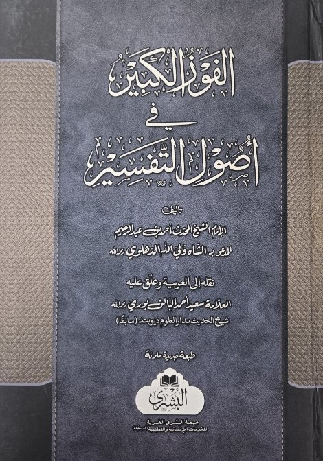
Usul TafsirAl-Fawz al-KabīrHardcoverYear VI$5.0010Taysīr Muṣṭalaḥ al-Ḥadīth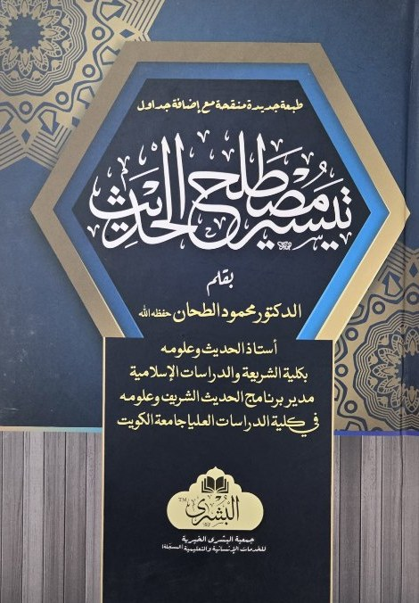
Usul HadithTaysīr Muṣṭalaḥ al-ḤadīthYear VI$10.0011Ghazv-i FikrīFikrGhazv-i FikrīYear VI$7.00Seventh Year17 books
01Ṣaḥīḥ al-Bukhārī HadithṢaḥīḥ al-BukhārīBrown coverYear VII$60.0002Ṣaḥīḥ al-Bukhārī
HadithṢaḥīḥ al-BukhārīBrown coverYear VII$60.0002Ṣaḥīḥ al-Bukhārī HadithṢaḥīḥ MuslimGreen coverYear VII$50.0004Ṣaḥīḥ Muslim
HadithṢaḥīḥ MuslimGreen coverYear VII$50.0004Ṣaḥīḥ Muslim HadithṢaḥīḥ MuslimBrown coverYear VII$50.0005Ṣaḥīḥ Muslim
HadithṢaḥīḥ MuslimBrown coverYear VII$50.0005Ṣaḥīḥ Muslim HadithṢaḥīḥ MuslimBlack coverYear VII$50.0006Sunan Abī Dāwūd
HadithṢaḥīḥ MuslimBlack coverYear VII$50.0006Sunan Abī Dāwūd HadithSunan Abī DāwūdRed and gold coverYear VII$40.0008Sunan Abī Dāwūd
HadithSunan Abī DāwūdRed and gold coverYear VII$40.0008Sunan Abī Dāwūd HadithSunan Abī DāwūdGreen coverYear VII$40.0009Sunan Ibn Māja
HadithSunan Abī DāwūdGreen coverYear VII$40.0009Sunan Ibn Māja HadithSunan Ibn MājaBlue coverYear VII$35.0010Sunan Ibn Māja
HadithSunan Ibn MājaBlue coverYear VII$35.0010Sunan Ibn Māja HadithSunan al-NasāʾīYear VII$40.0012Jāmiʿ al-Tirmidhī
HadithSunan al-NasāʾīYear VII$40.0012Jāmiʿ al-Tirmidhī![](data:image/svg+xml,%3Csvg%20xmlns%3D%22http%3A%2F%2Fwww.w3.org%2F2000%2Fsvg%22%20viewBox%3D%220%200%20300%20400%22%20width%3D%22300%22%20height%3D%22400%22%3E%3Cdefs%3E%3ClinearGradient%20id%3D%22gv%22%20x1%3D%220%22%20y1%3D%220%22%20x2%3D%220%22%20y2%3D%221%22%3E%3Cstop%20offset%3D%220%22%20stop-color%3D%22%23f7e2a2%22%2F%3E%3Cstop%20offset%3D%22.45%22%20stop-color%3D%22%23d9aa48%22%2F%3E%3Cstop%20offset%3D%22.8%22%20stop-color%3D%22%23a9792a%22%2F%3E%3Cstop%20offset%3D%221%22%20stop-color%3D%22%23e8c778%22%2F%3E%3C%2FlinearGradient%3E%3C%2Fdefs%3E%3Cfilter%20id%3D%22n%22%20x%3D%220%22%20y%3D%220%22%20width%3D%22100%25%22%20height%3D%22100%25%22%3E%3CfeTurbulence%20type%3D%22fractalNoise%22%20baseFrequency%3D%220.9%22%20numOctaves%3D%223%22%20stitchTiles%3D%22stitch%22%2F%3E%3CfeColorMatrix%20values%3D%220%200%200%200%200%20%200%200%200%200%200%20%200%200%200%200%200%20%200.5%200%200%200%20-0.22%22%2F%3E%3C%2Ffilter%3E%3ClinearGradient%20id%3D%22l%22%20x1%3D%220%22%20y1%3D%220%22%20x2%3D%221%22%20y2%3D%220%22%3E%3Cstop%20offset%3D%220%22%20stop-opacity%3D%220.4%22%2F%3E%3Cstop%20offset%3D%220.16%22%20stop-opacity%3D%220.04%22%2F%3E%3Cstop%20offset%3D%220.5%22%20stop-color%3D%22%23fff%22%20stop-opacity%3D%220.07%22%2F%3E%3Cstop%20offset%3D%221%22%20stop-opacity%3D%220.28%22%2F%3E%3C%2FlinearGradient%3E%3Cpattern%20id%3D%22b%22%20width%3D%228%22%20height%3D%2214%22%20patternUnits%3D%22userSpaceOnUse%22%20y%3D%2212%22%3E%3Cpath%20d%3D%22M1.2%200C6.8%203.5%206.8%2010.5%201.2%2014M6.8%200C1.2%203.5%201.2%2010.5%206.8%2014%22%20stroke%3D%22%23d9aa48%22%20stroke-width%3D%221.3%22%20fill%3D%22none%22%2F%3E%3C%2Fpattern%3E%3Crect%20width%3D%22300%22%20height%3D%22400%22%20fill%3D%22%2304222a%22%2F%3E%3Crect%20x%3D%2212%22%20y%3D%2212%22%20width%3D%22276%22%20height%3D%22376%22%20fill%3D%22none%22%20stroke%3D%22%23d9aa48%22%20stroke-width%3D%221.8%22%2F%3E%3Crect%20x%3D%2217%22%20y%3D%2216%22%20width%3D%228%22%20height%3D%22368%22%20fill%3D%22url%28%23b%29%22%2F%3E%3Crect%20x%3D%22275%22%20y%3D%2216%22%20width%3D%228%22%20height%3D%22368%22%20fill%3D%22url%28%23b%29%22%2F%3E%3Crect%20x%3D%2231%22%20y%3D%2220%22%20width%3D%22238%22%20height%3D%22360%22%20fill%3D%22%23136170%22%20fill-opacity%3D%22.55%22%20stroke%3D%22%23d9aa48%22%2F%3E%3Cg%20transform%3D%22translate%28150%200%29%20scale%282.2%29%22%3E%3Cline%20x1%3D%220%22%20y1%3D%2212.5%22%20x2%3D%220%22%20y2%3D%2218%22%20stroke%3D%22%23d9aa48%22%20stroke-width%3D%22.8%22%2F%3E%3Ccircle%20cx%3D%220%22%20cy%3D%2214.5%22%20r%3D%221.3%22%20fill%3D%22url%28%23gv%29%22%2F%3E%3Cpath%20d%3D%22M0%2018C7%2024%207%2031%200%2036.5C-7%2031%20-7%2024%200%2018Z%22%20fill%3D%22url%28%23gv%29%22%2F%3E%3Cpath%20d%3D%22M0%2023.5C3.2%2026.5%203.2%2030%200%2032.5C-3.2%2030%20-3.2%2026.5%200%2023.5Z%22%20fill%3D%22%2304222a%22%2F%3E%3Ccircle%20cx%3D%220%22%20cy%3D%2228.3%22%20r%3D%220.9%22%20fill%3D%22url%28%23gv%29%22%2F%3E%3C%2Fg%3E%3Cpath%20d%3D%22M150%20104%20C162.24%20120.5%20218%20113%20218%20134%20L218%20276%20C218%20297%20162.24%20289.5%20150%20306%20C137.76%20289.5%2082%20297%2082%20276%20L82%20134%20C82%20113%20137.76%20120.5%20150%20104%20Z%22%20fill%3D%22%2304222a%22%20stroke%3D%22url%28%23gv%29%22%20stroke-width%3D%221.3%22%2F%3E%3Cpath%20d%3D%22M150%20107.6%20C161.77%20123%20215.4%20116%20215.4%20135.6%20L215.4%20274.4%20C215.4%20294%20161.77%20287%20150%20302.4%20C138.23%20287%2084.6%20294%2084.6%20274.4%20L84.6%20135.6%20C84.6%20116%20138.23%20123%20150%20107.6%20Z%22%20fill%3D%22none%22%20stroke%3D%22%23d9aa48%22%20stroke-width%3D%22.55%22%20opacity%3D%22.75%22%2F%3E%3Ccircle%20cx%3D%22150%22%20cy%3D%22101.4%22%20r%3D%221.3%22%20fill%3D%22url%28%23gv%29%22%2F%3E%3Ccircle%20cx%3D%22150%22%20cy%3D%22308.6%22%20r%3D%221.3%22%20fill%3D%22url%28%23gv%29%22%2F%3E%3Cg%20transform%3D%22translate%28150%20326%29%20scale%282.2%29%22%3E%3Cpath%20d%3D%22M0%200L3.5%204L0%208L-3.5%204Z%22%20fill%3D%22url%28%23gv%29%22%2F%3E%3C%2Fg%3E%3Ctext%20x%3D%22150%22%20y%3D%22199.05%22%20text-anchor%3D%22middle%22%20fill%3D%22%23f4dfa2%22%20font-family%3D%22Georgia%2C%20serif%22%20font-size%3D%2223%22%20font-weight%3D%22600%22%3EJ%C4%81mi%CA%BF%3C%2Ftext%3E%3Ctext%20x%3D%22150%22%20y%3D%22227.05%22%20text-anchor%3D%22middle%22%20fill%3D%22%23f4dfa2%22%20font-family%3D%22Georgia%2C%20serif%22%20font-size%3D%2223%22%20font-weight%3D%22600%22%3Eal-Tirmidh%C4%AB%3C%2Ftext%3E%3Crect%20width%3D%22300%22%20height%3D%22400%22%20filter%3D%22url%28%23n%29%22%2F%3E%3Crect%20width%3D%22300%22%20height%3D%22400%22%20fill%3D%22url%28%23l%29%22%2F%3E%3C%2Fsvg%3E) HadithJāmiʿ al-TirmidhīYear VII$45.0013Sharḥ Maʿānī al-Āthār
HadithJāmiʿ al-TirmidhīYear VII$45.0013Sharḥ Maʿānī al-Āthār Usul HadithSharḥ Maʿānī al-ĀthārBlack cover, al-BushraYear VII$25.0014Sharḥ Maʿānī al-Āthār
Usul HadithSharḥ Maʿānī al-ĀthārBlack cover, al-BushraYear VII$25.0014Sharḥ Maʿānī al-Āthār Usul HadithSharḥ Maʿānī al-ĀthārBlack and gold, Ashrafi Book DepotYear VII$25.0015Muwaṭṭaʾ al-Imām Mālik
Usul HadithSharḥ Maʿānī al-ĀthārBlack and gold, Ashrafi Book DepotYear VII$25.0015Muwaṭṭaʾ al-Imām Mālik![](data:image/svg+xml,%3Csvg%20xmlns%3D%22http%3A%2F%2Fwww.w3.org%2F2000%2Fsvg%22%20viewBox%3D%220%200%20300%20400%22%20width%3D%22300%22%20height%3D%22400%22%3E%3Cdefs%3E%3ClinearGradient%20id%3D%22gv%22%20x1%3D%220%22%20y1%3D%220%22%20x2%3D%220%22%20y2%3D%221%22%3E%3Cstop%20offset%3D%220%22%20stop-color%3D%22%23f7e2a2%22%2F%3E%3Cstop%20offset%3D%22.45%22%20stop-color%3D%22%23d9aa48%22%2F%3E%3Cstop%20offset%3D%22.8%22%20stop-color%3D%22%23a9792a%22%2F%3E%3Cstop%20offset%3D%221%22%20stop-color%3D%22%23e8c778%22%2F%3E%3C%2FlinearGradient%3E%3C%2Fdefs%3E%3Cfilter%20id%3D%22n%22%20x%3D%220%22%20y%3D%220%22%20width%3D%22100%25%22%20height%3D%22100%25%22%3E%3CfeTurbulence%20type%3D%22fractalNoise%22%20baseFrequency%3D%220.9%22%20numOctaves%3D%223%22%20stitchTiles%3D%22stitch%22%2F%3E%3CfeColorMatrix%20values%3D%220%200%200%200%200%20%200%200%200%200%200%20%200%200%200%200%200%20%200.5%200%200%200%20-0.22%22%2F%3E%3C%2Ffilter%3E%3ClinearGradient%20id%3D%22l%22%20x1%3D%220%22%20y1%3D%220%22%20x2%3D%221%22%20y2%3D%220%22%3E%3Cstop%20offset%3D%220%22%20stop-opacity%3D%220.4%22%2F%3E%3Cstop%20offset%3D%220.16%22%20stop-opacity%3D%220.04%22%2F%3E%3Cstop%20offset%3D%220.5%22%20stop-color%3D%22%23fff%22%20stop-opacity%3D%220.07%22%2F%3E%3Cstop%20offset%3D%221%22%20stop-opacity%3D%220.28%22%2F%3E%3C%2FlinearGradient%3E%3Cpattern%20id%3D%22b%22%20width%3D%228%22%20height%3D%2214%22%20patternUnits%3D%22userSpaceOnUse%22%20y%3D%2212%22%3E%3Cpath%20d%3D%22M1.2%200C6.8%203.5%206.8%2010.5%201.2%2014M6.8%200C1.2%203.5%201.2%2010.5%206.8%2014%22%20stroke%3D%22%23d9aa48%22%20stroke-width%3D%221.3%22%20fill%3D%22none%22%2F%3E%3C%2Fpattern%3E%3Crect%20width%3D%22300%22%20height%3D%22400%22%20fill%3D%22%2304222a%22%2F%3E%3Crect%20x%3D%2212%22%20y%3D%2212%22%20width%3D%22276%22%20height%3D%22376%22%20fill%3D%22none%22%20stroke%3D%22%23d9aa48%22%20stroke-width%3D%221.8%22%2F%3E%3Crect%20x%3D%2217%22%20y%3D%2216%22%20width%3D%228%22%20height%3D%22368%22%20fill%3D%22url%28%23b%29%22%2F%3E%3Crect%20x%3D%22275%22%20y%3D%2216%22%20width%3D%228%22%20height%3D%22368%22%20fill%3D%22url%28%23b%29%22%2F%3E%3Crect%20x%3D%2231%22%20y%3D%2220%22%20width%3D%22238%22%20height%3D%22360%22%20fill%3D%22%23136170%22%20fill-opacity%3D%22.55%22%20stroke%3D%22%23d9aa48%22%2F%3E%3Cg%20transform%3D%22translate%28150%200%29%20scale%282.2%29%22%3E%3Cline%20x1%3D%220%22%20y1%3D%2212.5%22%20x2%3D%220%22%20y2%3D%2218%22%20stroke%3D%22%23d9aa48%22%20stroke-width%3D%22.8%22%2F%3E%3Ccircle%20cx%3D%220%22%20cy%3D%2214.5%22%20r%3D%221.3%22%20fill%3D%22url%28%23gv%29%22%2F%3E%3Cpath%20d%3D%22M0%2018C7%2024%207%2031%200%2036.5C-7%2031%20-7%2024%200%2018Z%22%20fill%3D%22url%28%23gv%29%22%2F%3E%3Cpath%20d%3D%22M0%2023.5C3.2%2026.5%203.2%2030%200%2032.5C-3.2%2030%20-3.2%2026.5%200%2023.5Z%22%20fill%3D%22%2304222a%22%2F%3E%3Ccircle%20cx%3D%220%22%20cy%3D%2228.3%22%20r%3D%220.9%22%20fill%3D%22url%28%23gv%29%22%2F%3E%3C%2Fg%3E%3Cpath%20d%3D%22M150%20104%20C162.24%20120.5%20218%20113%20218%20134%20L218%20276%20C218%20297%20162.24%20289.5%20150%20306%20C137.76%20289.5%2082%20297%2082%20276%20L82%20134%20C82%20113%20137.76%20120.5%20150%20104%20Z%22%20fill%3D%22%2304222a%22%20stroke%3D%22url%28%23gv%29%22%20stroke-width%3D%221.3%22%2F%3E%3Cpath%20d%3D%22M150%20107.6%20C161.77%20123%20215.4%20116%20215.4%20135.6%20L215.4%20274.4%20C215.4%20294%20161.77%20287%20150%20302.4%20C138.23%20287%2084.6%20294%2084.6%20274.4%20L84.6%20135.6%20C84.6%20116%20138.23%20123%20150%20107.6%20Z%22%20fill%3D%22none%22%20stroke%3D%22%23d9aa48%22%20stroke-width%3D%22.55%22%20opacity%3D%22.75%22%2F%3E%3Ccircle%20cx%3D%22150%22%20cy%3D%22101.4%22%20r%3D%221.3%22%20fill%3D%22url%28%23gv%29%22%2F%3E%3Ccircle%20cx%3D%22150%22%20cy%3D%22308.6%22%20r%3D%221.3%22%20fill%3D%22url%28%23gv%29%22%2F%3E%3Cg%20transform%3D%22translate%28150%20326%29%20scale%282.2%29%22%3E%3Cpath%20d%3D%22M0%200L3.5%204L0%208L-3.5%204Z%22%20fill%3D%22url%28%23gv%29%22%2F%3E%3C%2Fg%3E%3Ctext%20x%3D%22150%22%20y%3D%22187%22%20text-anchor%3D%22middle%22%20fill%3D%22%23f4dfa2%22%20font-family%3D%22Georgia%2C%20serif%22%20font-size%3D%2220%22%20font-weight%3D%22600%22%3EMuwa%E1%B9%AD%E1%B9%ADa%CA%BE%3C%2Ftext%3E%3Ctext%20x%3D%22150%22%20y%3D%22212%22%20text-anchor%3D%22middle%22%20fill%3D%22%23f4dfa2%22%20font-family%3D%22Georgia%2C%20serif%22%20font-size%3D%2220%22%20font-weight%3D%22600%22%3Eal-Im%C4%81m%3C%2Ftext%3E%3Ctext%20x%3D%22150%22%20y%3D%22237%22%20text-anchor%3D%22middle%22%20fill%3D%22%23f4dfa2%22%20font-family%3D%22Georgia%2C%20serif%22%20font-size%3D%2220%22%20font-weight%3D%22600%22%3EM%C4%81lik%3C%2Ftext%3E%3Crect%20width%3D%22300%22%20height%3D%22400%22%20filter%3D%22url%28%23n%29%22%2F%3E%3Crect%20width%3D%22300%22%20height%3D%22400%22%20fill%3D%22url%28%23l%29%22%2F%3E%3C%2Fsvg%3E) HadithMuwaṭṭaʾ al-Imām MālikYear VII$25.0016Muwaṭṭaʾ al-Imām Muḥammad
HadithMuwaṭṭaʾ al-Imām MālikYear VII$25.0016Muwaṭṭaʾ al-Imām Muḥammad HadithMuwaṭṭaʾ al-Imām MuḥammadYear VII$25.0017Nūr al-Īḍāḥ
HadithMuwaṭṭaʾ al-Imām MuḥammadYear VII$25.0017Nūr al-Īḍāḥ FiqhNūr al-ĪḍāḥYear VII$12.00
FiqhNūr al-ĪḍāḥYear VII$12.00
HadithṢaḥīḥ al-BukhārīBrown coverYear VII$60.0002Ṣaḥīḥ al-Bukhārī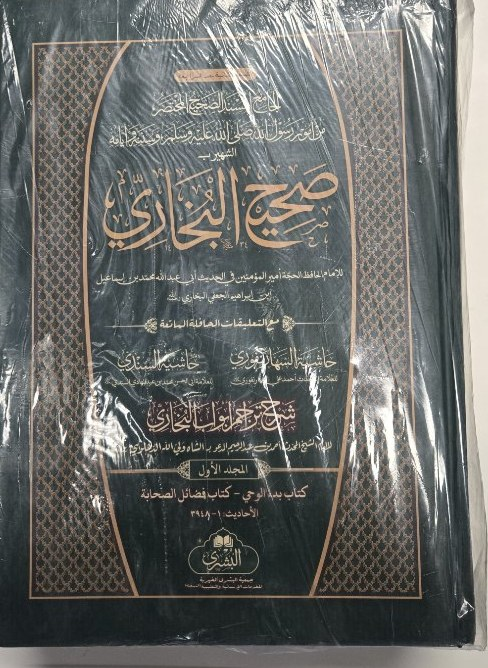
HadithṢaḥīḥ al-BukhārīGreen coverYear VII$60.0003Ṣaḥīḥ MuslimHadithṢaḥīḥ MuslimGreen coverYear VII$50.0004Ṣaḥīḥ MuslimHadithṢaḥīḥ MuslimBrown coverYear VII$50.0005Ṣaḥīḥ MuslimHadithṢaḥīḥ MuslimBlack coverYear VII$50.0006Sunan Abī Dāwūd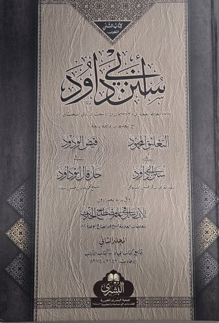
HadithSunan Abī DāwūdGrey coverYear VII$40.0007Sunan Abī DāwūdHadithSunan Abī DāwūdRed and gold coverYear VII$40.0008Sunan Abī DāwūdHadithSunan Abī DāwūdGreen coverYear VII$40.0009Sunan Ibn MājaHadithSunan Ibn MājaBlue coverYear VII$35.0010Sunan Ibn Māja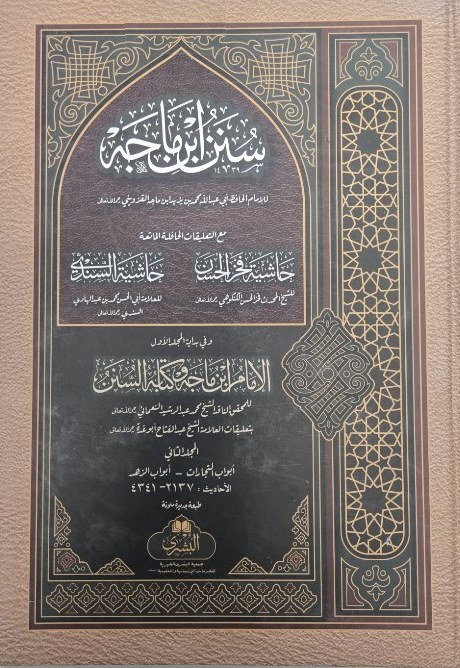
HadithSunan Ibn MājaPink coverYear VII$35.0011Sunan al-NasāʾīHadithSunan al-NasāʾīYear VII$40.0012Jāmiʿ al-TirmidhīHadithJāmiʿ al-TirmidhīYear VII$45.0013Sharḥ Maʿānī al-ĀthārUsul HadithSharḥ Maʿānī al-ĀthārBlack cover, al-BushraYear VII$25.0014Sharḥ Maʿānī al-ĀthārUsul HadithSharḥ Maʿānī al-ĀthārBlack and gold, Ashrafi Book DepotYear VII$25.0015Muwaṭṭaʾ al-Imām MālikHadithMuwaṭṭaʾ al-Imām MālikYear VII$25.0016Muwaṭṭaʾ al-Imām MuḥammadHadithMuwaṭṭaʾ al-Imām MuḥammadYear VII$25.0017Nūr al-ĪḍāḥFiqhNūr al-ĪḍāḥYear VII$12.00